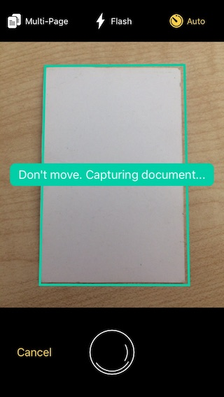
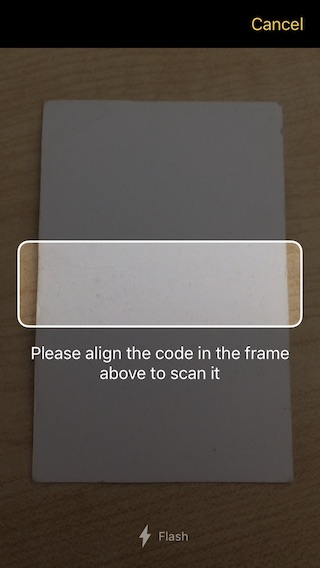
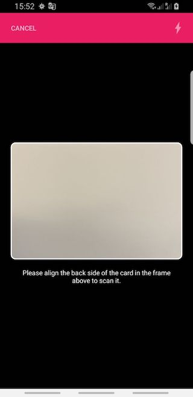

Scanbot SDK Flutter Plugin
Introduction
The Scanbot SDK brings scanning and document creation capabilities to your mobile apps. It contains modules which are individually licensable as license packages. For more details visit our website https://scanbot.io/sdk
This Flutter plugin provides implementations of the Scanbot SDK for iOS and Android.
Following functionality is covered by this plugin:
- Document Scanning with User Guidance
- Cropping UI
- Document Detection
- Image Filters
- PDF Creation
- TIFF Creation
- Barcode and QR Code Scanning
- MRZ (Machine Readable Zones) Scanning
- EHIC (European Health Insuranse Card) Scanning
Requirements
Dev Tools
- flutter sdk 1.9.1+
- For Android apps: Android SDK (API Level 21+), Platforms and Developer Tools
- For iOS apps: Mac OS with latest Xcode and Command Line Tools
Mobile Platforms
- Android 5.0 (API Level 21) and higher
- iOS 11 and higher
Please note:
- This Plugin and the Scanbot SDK are available only for Android and iOS
- We don’t support rooted Android devices (custom ROMs)
- This Plugin does not work on other platforms like Windows Phone, Desktop or Web Apps
- Also, the Plugin does not work in a Flutter Hummingbird and MacOs versions
Mobile Devices
- Smartphones and Tablets with a rear-facing camera with autofocus
- Supported CPUs and Architectures:
- Android:
armeabi-v7, arm64-v8a, x86, x86_64 - iOS:
arm64,x86_64
- Android:
No Internet Connection Required
The Scanbot SDK works completely offline. It doesn’t even contain any networking code. This can easily be verified by routing all networking traffic coming from the app through a proxy. All data generated by the Scanbot SDK is only stored on the end users device and in absolutely no case ever transferred to a server / cloud service controlled by us. You as the customer will need to take care of uploading the scans / data to your backend, if desired.
Simulators / Emulators
While it is possible to test your App with the Scanbot SDK Plugin on simulators/emulators, we strongly recommend to use real Android/iOS devices. Depending on the emulated Camera you may not be able to test/evaluate the full functionality of the Scanbot SDK Plugin.
Example Apps
Check out our example apps on GitHub:
- Flutter example app: https://github.com/doo/scanbot-sdk-example-flutter
Installation
The Scanbot SDK Flutter Plugin is available as a Flutter Dart package scanbot_sdk on pub.dev. You can simply add it as dependency to your App.
Add the scanbot_sdk plugin to your pubspec.yaml file as dependencies:
dependencies:
scanbot_sdk: ^2.0.0 # see the latest sdk version
Use the flutter CLI (or your IDE) to fetch and install the packages:
$ flutter pub get
Android
In the top-level android/build.gradle file:
- Update kotlin version to at least
1.4.0or higher. Typically defined viaext.kotlin_versionvariable:... buildscript { ext.kotlin_version = '1.4.0' ... }
In the app-level android/app/build.gradle file:
- Add the following
packagingOptionsandroid { ... packagingOptions { pickFirst 'META-INF/atomicfu.kotlin_module' pickFirst 'META-INF/proguard/coroutines.pro' exclude 'META-INF/LICENSE.txt' exclude 'META-INF/NOTICE.txt' exclude 'META-INF/LICENSE' exclude 'META-INF/NOTICE' } } - Enable multidex:
android { defaultConfig { ... multiDexEnabled true } }
In the android/app/src/main/AndroidManifest.xml file:
-
Add the
largeHeapflag: Since your application will work with high-resolution images it is strongly recommended to add the attributeandroid:largeHeap="true"in the<application>element of yourAndroidManifest.xmlfile, especially for Android <= 7.x. Processing hi-res images is a memory intensive task and this property will ensure your app has enough heap allocated to avoidOutOfMemoryErrorexceptions. -
Add the
CAMERApermission:<uses-permission android:name="android.permission.CAMERA" />
iOS
For iOS you need to adjust the Podfile and install or update the Pods:
Make sure you have specified a global platform version in the ios/Podfile file, like:
platform :ios, '11.0'
Then run:
$ cd ios/
$ pod install
In your Info.plist file add the required NSCameraUsageDescription property:
NSCameraUsageDescription - “Privacy - Camera Usage Description”.
As value describe why your app wants to access the camera.
Please note that without this property the app will crash on camera access!
Plugin SDK Modules
-
ScanbotSdk- This module provides the Scanbot SDK functionality for image operations (e.g. filter, PDF creation, etc.) -
ScanbotSdkUi- Provides the UI functionality like Document Scanner UI, Cropping UI, Barcode Scanner UI, MRZ Scanner UI and EHIC Scanner UI.
API Reference
ScanbotSdk- .initScanbotSdk(config) -
function - .getLicenseStatus() -
function - .createPage(originalImageFileUri, shouldDetectDocument) -
function - .detectDocument(page) -
function - .getFilteredDocumentPreviewUri(page, filter) -
function - .applyImageFilter(page, filter) -
function - .rotatePageClockwise(page, rotationsCount) -
function - .deletePage(page) -
function - .createPdf(pages, options) -
function - .createTiff(pages, options) -
function - .getOcrConfigs() -
function - .performOcr(pages, options) -
function - .cleanupStorage() -
function
- .initScanbotSdk(config) -
ScanbotSdkUi- .startDocumentScanner(config) -
function - .startCroppingScreen(config) -
function - .startBarcodeScanner(config) -
function - .startMrzScanner(config) -
function - .startEhicScanner(config) -
function
- .startDocumentScanner(config) -
Getting Started
Initialize SDK
ScanbotSdk.initScanbotSdk(config)
ScanbotSDK must be initialized before usage!
The following configuration options can be passed on initialization:
Options:
var config = ScanbotSdkConfig(
licenseKey: "<YOUR_SCANBOT_SDK_LICENSE_KEY>",
loggingEnabled: true,
imageFormat: ImageFormat.JPG,
imageQuality: 80,
storageBaseDirectory: "file:///some/optional/custom-storage-dir/",
documentDetectorMode: DocumentDetectorMode.ML_BASED,
licenseErrorHandler: (status, feature) {
print("status: $status, feature $feature");
},
);
ScanbotSdk.initScanbotSdk(config);
licenseKey: Your license key for the Scanbot SDK.loggingEnabled: Optional logging flag.imageFormat: Optional image format value.imageQuality: Optional image quality value.storageBaseDirectory: Optional directory as file URI to overwrite the default storage directory of the Scanbot SDK.documentDetectorMode: Optional document detector mode.DocumentDetectorMode.EDGE_BASED- default implementation, based on classical edge detection approachDocumentDetectorMode.ML_BASED- new Machine Learning based approach (requires iOS 11.2+)
licenseErrorHandler: Callback function to get info about problems with license key or concrete feature that is not available for usage
Example code for initialization:
class MyApp extends StatefulWidget {
@override
_MyAppState createState() {
// Please note: this is just an example license key string (it's not a valid license)
String licenseKey =
"fXbN2PmyqEAZ+btdkSIS36TuX2j/EE5qxVNcZMXYErbLQ" +
"3OBnE10aOQxYI8L4UKwHiZ63jthvoFwUevttctBk0wVJ7Z" +
"+Psz3/Ry8w7pXvfpB1o+JrnzGGcfwBnRi/5raQ2THDeokR" +
"RB1keky2VBOFYbCfYt3Hqms5txF2z70PE/SBTMTIVuxL7q" +
"1xcHDHclbEBriDtrHw8Pmhh9FqTg/r/4kRN/oEX37QGp+Y" +
"3ogwIBbSmV+Cv+VuwtI31uXY3/GkyN/pSJZspIl+exwQDv" +
"O0O1/R/oAURpfM4ydaWReRJtjW8+b1r9rUgPERguaXfcse" +
"HlnclItgDfBHzUUFJJU/g==\nU2NhbmJvdFNESwppby5zY" +
"2FuYm90LmRlbW8ueGFtYXJpbgoxNDg0NjExMTk5CjcxNjc" +
"KMw==\n";
var config = ScanbotSdkConfig(
licenseKey: licenseKey,
imageFormat: ImageFormat.JPG,
imageQuality: 80,
loggingEnabled: true
);
ScanbotSdk.initScanbotSdk(config);
});
return _MyAppState();
}
}
License Key
In order to run the Scanbot SDK plugin functionality within your production app, you have to purchase and use a valid Scanbot SDK license.
Each license key is valid only for a given app bundle identifier. The license also defines which modules you are allowed to use. The usage of unlicensed modules will log an error to the console and terminate the app. If your license has expired any calls of the Scanbot SDK plugin will terminate your app.
Trial License
The Scanbot SDK will run without a license for one minute per session! To get an unrestricted “no-strings-attached” 30 day trial license, please submit the Trial License Form on our website.
Please kindly note that a trial license can only be used in a development and staging environment. You are not allowed to publish your app to the App Store, Play Store or any 3rd party Android App Store with a trial license.
Purchase a Production License
You can check and purchase the Scanbot SDK licenses here: https://scanbot.io/sdk.html.
App Identifier
Every app has a unique identifier (sometimes also known as “bundle identifier” or “application ID”). Your license will be bound to this identifier. To request a trial license or purchase a production license, you have to provide us the bundle identifier of your app.
For Android: Please find it as applicationId in the app-level build.gradle file of your android project:
defaultConfig {
...
applicationId "io.scanbot.example.app.flutter"
}
For iOS: In Xcode see the Bundle Identifier in the “General” settings tab of your project.
Logging
When initializing the Scanbot SDK you can enable logging of the SDK. By default logging is disabled.
var config = ScanbotSdkConfig(
loggingEnabled: true,
// ...
);
ScanbotSdk.initScanbotSdk(config);
On Android logs are printed into LogCat as well as saved on the device.
The easiest way to check the log outputs on Android is to use the
Android Debug Bridge (adb).
(e.g. $ adb -s <DEVICE_ID> shell "logcat")
On iOS all logs are printed to the console. Please use Xcode to check the log outputs. There will be no log files created by the Scanbot SDK plugin.
Please note: While it may be useful for development, consider switching logging OFF in production builds for security and performance reasons!
Image Quality / Compression
The initializeSdk function can take some optional parameters that specify
the image storage format and compression for generated Page images.
Page images are all images created by the Ready-To-Use UI Components
(like Document Scanner, Cropping UI, etc), as well as all image manipulation functions
working with Page objects as input (like applyImageFilterOnPage, detectDocumentOnPage, etc).
var config = ScanbotSdkConfig(
imageFormat: ImageFormat.JPG,
imageQuality: 80,
);
ScanbotSdk.initScanbotSdk(config);
imageQuality- defines the quality factor of JPEG images. The value must be between 1 and 100, where 100 means maximum quality and largest file size. The default value is 80 which is a good compromise between image file size and document legibility.imageFormat- eitherJPGorPNG. The default value isJPG.
Updating License Key in Production Apps
To renew an expired license or extend a valid license with new Scanbot SDK features, you will have to update your app in the App Store or Play Store. The expiration date and the feature list of a license are an encrypted data part of the license key string. Which means a renewal or extension of a license will cause a new license key string to be generated.
License Check in Production Apps
If your Scanbot SDK license has expired, any call of the Scanbot SDK API will terminate your app or result in an error.
To prevent this, you should always check for license expiration
during the runtime by calling the method ScanbotSdk.getLicenseStatus().
If the result of await returns result.isLicenseValid == false,
you should disable any usage of the Scanbot SDK functions or UI components in your app.
We highly recommend to implement a suitable handling of this case in your app!
ScanbotSdk.getLicenseStatus()
Use this function to check the current state of the license. The SDK must be initialized.
var result = await ScanbotSdk.getLicenseStatus();
if (result.isLicenseValid) {
// Making your calls of the Scanbot SDK Plugin API is safe now.
// e.g. start the Document Scanner
} else {
// Implement a suitable handling (e.g. disable Scanbot functionality in your App)
showAlert("Scanbot SDK license has expired! Please install the latest app update.");
}
result.isLicenseValid- Contains a boolean status value of the license.truemeans the Scanbot SDK license is valid and all features can be used normally.falsemeans the license is not valid and any call of the Scanbot SDK API will terminate your app or result in an error.
Storage
By default the native Scanbot SDKs as well as the Plugin itself use the internal and secure storage locations for all produced files (JPG, PNG, PDF, TIFF, etc).
-
On Android all files will be stored in the internal files directory of your application. No permissions are required for your app to read or write files in this directory.
-
On iOS all files will be stored in the Application Support folder of your application.
Customize Storage Location
It is strongly recommended to use the default storage location.
However, you can overwrite the storage directory on initialization of the Plugin.
The initializeSdk method can take an optional parameter storageBaseDirectory to set a custom storage location.
Directory storageDirectory;
if (Platform.isAndroid) {
storageDirectory = await getExternalStorageDirectory();
}
if (Platform.isIOS) {
storageDirectory = await getApplicationDocumentsDirectory();
}
// Please note: getExternalStorageDirectory() and getApplicationDocumentsDirectory()
// are provided via 3rd-party plugins like "path_provider".
var config = ScanbotSdkConfig(
storageBaseDirectory: "${directory.path}/my_custom_storage",
...
);
await ScanbotSdk.initScanbotSdk(config);
The value of the storageBaseDirectory must be a file URL ('file:///...)
pointing to a valid platform-specific file system path.
If this directory does not exist yet, the Plugin will try to create it.
To work with the file system we recommend the Flutter Plugin path_provider
For the full demo code please checkout our example app on GitHub.
⚠️ Note: When overwriting the default storage location, make sure
- you have implemented a suitable storage permissions request handling on Android
- you fully understand the consequences regarding the accessibility (security) of the produced document files.
👉 For more details about the storage locations on Android and iOS please also see:
Storage Cleanup
There is no automatic file clean mechanism in this Plugin, because only your App can decide when is the perfect time to remove the files produced by this Plugin (images, PDFs, etc).
To avoid storage space issues caused by too many produced image files, it is strongly recommended to implement a suitable cleanup functionality based on the requirements of your app. This Plugin provides the following helper methods to keep the storage clean:
- deletePage method to delete a certain
Pageobject with all its files. - cleanupStorage method to remove all generated files by this Plugin (scanned and imported images, export files like PDF, TIFF, etc).
Ready-To-Use UI Screen Components
Configuration
Settings controlling color are expected to be passed as strings in the '#RRGGBB' format.
Pages
The Scanbot SDK Plugin provides so-called Ready-to-Use UI (RTU UI) screen components for document scanning and cropping. Both components use the notion of a ‘page’ as a data model for the scanning and cropping activities. A page object has the following fields:
Page (
String pageId;
List<PolygonPoint> polygon;
DetectionStatus detectionStatus;
ImageFilterType filter;
Size documentImageSizeLimit;
Uri originalImageFileUri;
Uri documentImageFileUri;
Uri originalPreviewImageFileUri;
Uri documentPreviewImageFileUri;
)
The fields are:
pageId- an unique, random string (UUID) identifying the page in the internal page file storagepolygon- the page’s cropping polygon as calculated by a document detection operation or as set by the cropping UI. Modifying the polygon will change the polygon as shown in the cropping UI but will not automatically re-crop the original image.detectionStatus- the detection status of the document detection operation that produced the page (either the document scanner ordetectDocument()).filter- the image filter type which was applied on the document image of this page.documentImageSizeLimit- limits the maximum resolution (width, height) of the document image. Ifnullis passed, this property is effectively ignored. If specified,widthandheightmust be > 0.originalImageFileUri- file URI of the original imagedocumentImageFileUri- file URI of the cropped document image (if document detection was successful)originalPreviewImageFileUri- file URI of a screen-sized preview of the original imagedocumentPreviewImageFileUri- file URI of a screen-sized preview of the document image
Pages are stored in an internal page file storage,
where the pageId serves as a name prefix for the stored image files.
Operations that modify pages work in-place.
That is, for example, rotatePageClockwise() overwrites the page’s image files with their rotated versions.
Document Scanner
ScanbotSdkUi.startDocumentScanner(config)
Starts the Document Scanner for guided, automatic document scanning.

var config = DocumentScannerConfiguration(
multiPageEnabled: true,
bottomBarBackgroundColor: Colors.blueAccent,
pageCounterButtonTitle: "%d Page(s)",
...
);
var result = await ScanbotSdkUi.startDocumentScanner(config);
if (result.operationResult == OperationResult.SUCCESS) {
print('Document Scanner Result: ' + jsonEncode(result));
// see the array result.pages[] of scanned pages
}
result.operationResult-SUCCESSif some pages were snappedERRORif an error occurredCANCELEDif the user canceled the request
result.pages- an array of pages. If multi-page mode is enabled, this array may contain more than one page. If multi-page mode is not enabled andresult.statusisSUCCESS, this array contains one object.
DocumentScannerConfiguration
All UI configuration options are optional.
/// The background color of the top toolbar.
Color topBarBackgroundColor;
/// The color of all inactive toggle buttons in the toolbar.
Color topBarButtonsInactiveColor;
/// The color of all active toggle buttons in the toolbar.
Color topBarButtonsActiveColor;
/// The color of the camera background (relevant only when the camera preview mode is CameraPreviewMode.FIT_IN).
Color cameraBackgroundColor;
/// The background color of the user guidance hints.
Color userGuidanceBackgroundColor;
/// The text color of the user guidance hints.
Color userGuidanceTextColor;
/// The background color of the bottom shutter-bar.
Color bottomBarBackgroundColor;
/// The color of the title of all buttons in the bottom shutter-bar (Cancel button, etc.),
/// as well as the camera permission prompt button.
Color bottomBarButtonsColor;
/// The foreground color of the shutter button in auto-snapping mode.
Color shutterButtonAutoInnerColor;
/// The background color of the shutter button in auto-snapping mode.
Color shutterButtonAutoOuterColor;
/// The background color of the shutter button in manual mode.
Color shutterButtonManualOuterColor;
/// The foreground color of the shutter button in manual mode.
Color shutterButtonManualInnerColor;
/// The color of the detected document outline when the document's angle, size or aspect ratio
/// is not yet sufficiently good.
/// (All detection statuses .DetectionStatus that have the OK_BUT_XXX prefix).
Color polygonColor;
/// The color of the detected document outline when we are ready to snap DetectionStatus.OK.
Color polygonColorOK;
/// The background color of the detected document outline when the document's angle, size or aspect ratio
/// is not yet sufficiently good.
/// (All DetectionResult with OK_BUT_XXX).
Color polygonBackgroundColor;
/// The background color of the detected document outline when we are ready to snap DetectionStatus.OK.
Color polygonBackgroundColorOK;
Color shutterButtonIndicatorColor;
/// Controls whether the multi-page toggle button is hidden or not.
bool multiPageButtonHidden;
/// Controls whether the flash toggle button is hidden or not.
bool flashButtonHidden;
/// Hides the shutter button if set to TRUE. Shows it otherwise. Defaults to FALSE.
/// If set to TRUE, auto-snapping is enabled and the property autoSnappingEnabled of the behaviour configuration will
/// have no effect.
/// Also the auto-snapping button will be hidden.
bool shutterButtonHidden;
/// Controls whether the auto-snapping toggle button is hidden or not.
bool autoSnappingButtonHidden;
bool cancelButtonHidden;
/// Width of the detected document outline.
int polygonLineWidth;
/// max number of pages available to scan;
int maxNumberOfPages;
/// The minimum score in percent (0 - 100) of the perspective distortion to accept a detected document.
/// Default is 75.0.
double acceptedAngleScore;
/// The minimum document width or height in percent (0 - 100) of the screen size to accept a detected document.
/// Default is 80.0.
double acceptedSizeScore;
/// Controls the auto-snapping speed. Sensitivity must be within the 0..1 range.
/// A value of 1.0 triggers automatic capturing immediately, a value of 0.0 delays the automatic by 3 seconds.
/// The default value is 0.66 (2 seconds)
double autoSnappingSensitivity;
/// Limits the maximum size of the document image. If width or height are zero, this property is effectively ignored.
Size documentImageSizeLimit;
/// Preview mode of the camera: Fit-In or Fill-In.
/// Optional, default is Fit-In.
CameraPreviewMode cameraPreviewMode;
/// Orientation lock mode of the camera: PORTRAIT or LANDSCAPE.
/// By default the camera orientation is not locked.
CameraOrientationMode orientationLockMode;
/// Sets whether to ignore the DetectionResult.OK_BUT_BAD_ASPECT_RATIO detection status.
/// By default BadAspectRatio is not ignored.
bool ignoreBadAspectRatio;
/// Controls whether the flash should be initially enabled.
/// The default value is FALSE.
bool flashEnabled;
/// Controls multi-page mode. When enabled, the user can take multiple document photos before
/// closing the screen by tapping the page counter button. When disabled, the screen will be
/// closed immediately after the first document photo is made.
/// The default value is FALSE.
bool multiPageEnabled;
/// When auto-snapping is enabled the document scanner will take a photo automatically
/// when a document is detected, conditions are good and the auto-snapping time-out elapses. In this
/// mode the user can still tap the shutter button to snap a document.
bool autoSnappingEnabled;
String multiPageButtonTitle;
/// Title of the cancel button.
String cancelButtonTitle;
/// Title of the flash toggle button.
String flashButtonTitle;
/// Title of the auto-snapping toggle button.
String autoSnappingButtonTitle;
/// Title suffix of the button that finishes the document scanning when multi-page scanning is enabled.
/// The button's title has the format "# Pages", where # shows the number of images captured up to now and the
/// suffix "Pages" is set using this method.
String pageCounterButtonTitle;
/// The text being displayed on the user-guidance label, when the scanners energy saver is activated.
/// iOS only.
String textHintEnergySavingActive;
/// Text hint that will be shown when the current detection status is DetectionStatus.ERROR_NOTHING_DETECTED
String textHintNothingDetected;
/// Text hint that will be shown when the current detection status is DetectionStatus.ERROR_TOO_NOISY
String textHintTooNoisy;
/// Text hint that will be shown when the current detection status is DetectionStatus.ERROR_TOO_DARK
String textHintTooDark;
/// Text hint that will be shown when the current detection status is DetectionStatus.OK_BUT_BAD_ANGLES
String textHintBadAngles;
/// Text hint that will be shown when the current detection status is OK_BUT_BAD_ASPECT_RATIO
String textHintBadAspectRatio;
/// Text hint that will be shown when the current detection status is DetectionStatus.OK_BUT_TOO_SMALL
String textHintTooSmall;
/// The background color of the top toolbar.
String textHintOffCenter;
/// Text hint that will be shown when the current detection status is DetectionStatus.OK
String textHintOK;
String cameraUnavailableExplanationText;
Cropping UI
ScanbotSdkUi.startCroppingScreen(page,config)
The Cropping UI provides functionality for manual cropping and rotation of an image. It uses the edge detection algorithm of the Scanbot SDK and contains some smart UI elements like magnetic lines and a magnifier.

var config = CroppingScreenConfiguration(
bottomBarBackgroundColor: Colors.redAccent,
cancelButtonTitle: 'Cancel',
doneButtonTitle: 'Save',
...
);
var result = await ScanbotSdkUi.startCroppingScreen(page, config);
// result.page ...
result.operationResultSUCCESSif the user applied changes on image (tapped on the “done” button)ERRORif an error occurredCANCELEDif the user has canceled the operation (tapped on the “cancel” button)
result.page- the cropped page.
CroppingScreenConfiguration
The cropping UI requires a page object. A page object can be initially created using the Document Scanner or createPage().
All UI configuration settings are optional.
/// Background color of the main screen.
Color backgroundColor;
/// Background color of the bottom toolbar.
Color bottomBarBackgroundColor;
/// Color of the titles of all buttons in the bottom toolbar (Rotate button).
Color bottomBarButtonsColor;
/// Title of the cancel button.
String cancelButtonTitle;
/// Title of the Done button.
String doneButtonTitle;
/// Default color of the cropping outline.
Color polygonColor;
/// Outline color of magnetically snapped edges.
Color polygonColorMagnetic;
/// Width of the cropping outline.
int polygonLineWidth;
/// Title of the Rotate button.
String rotateButtonTitle;
/// Background color of the top toolbar.
Color topBarBackgroundColor;
/// Color of the titles of all buttons in the top toolbar (Cancel and Done buttons).
Color topBarButtonsColor;
/// Title in the top bar (iOS only).
String topBarTitle;
/// Color of the title in the top bar (iOS only).
Color titleColor;
/// Title of the Detect button.
String detectButtonTitle;
/// Title of the Reset button.
String resetButtonTitle;
/// Controls whether the Rotate button is hidden or not.
bool rotateButtonHidden;
/// Controls whether the Detect/Reset button is hidden or not.
bool detectResetButtonHidden;
Page page;
/// UI orientation lock mode: PORTRAIT, LANDSCAPE, etc.
/// By default the UI is not locked.
CameraOrientationMode orientationLockMode;
Barcode and QR Code Scanning UI
ScanbotSdkUi.startBarcodeScanner(config)
Opens a Scanning UI for barcodes and QR codes.

var config = BarcodeScannerConfiguration(
barcodeFormats: [BarcodeFormat.CODE_128, BarcodeFormat.DATA_MATRIX],
topBarBackgroundColor: Colors.blueAccent,
finderTextHint: "Please align a barcode in the frame to scan it.",
cancelButtonTitle: "Cancel",
flashEnabled: true,
...
);
var result = await ScanbotSdkUi.startBarcodeScanner(config);
// result.barcodeItems[n].barcodeFormat
// result.barcodeItems[n].text
// result.barcodeItems[n].formattedResult
result.operationResult:SUCCESSif a barcode was detectedERRORif an error occurredCANCELEDif the user has canceled the operation (tapped on the “cancel” button)
barcodeItems[n]- a list of detected barcodes/QR codes asBarcodeItems:item.barcodeFormat- Format of detected barcode/QR code (e.g. “CODE_128”, “EAN_13”, “QR_CODE”, etc).item.text- Raw text value of detected barcode/QR code.item.formattedResult- Optional, formatted/parsed result. See implementations ofBarcodeFormattedResult.
BarcodeScannerConfiguration
All settings are optional.
-
barcodeFormatsis an optional array of barcode formats that act as a detection filter. By default all supported formats will be detected. -
Further configs:
/// Background color of the top toolbar.
Color topBarBackgroundColor;
/// Color of the titles of all buttons in the top toolbar.
Color topBarButtonsColor;
/// Background color outside of the finder window.
Color cameraOverlayColor;
/// Color of the finder window's outline.
Color finderLineColor;
/// Color of the text hint under the finder window.
Color finderTextHintColor;
///color of active buttons on bottom bar
Color bottomButtonsActiveColor;
///color of inactive buttons on bottom bar
Color bottomButtonsInactiveColor;
bool cancelButtonHidden;
/// Title of the cancel button.
String cancelButtonTitle;
/// Title of the button that opens the screen where the user can allow
/// the usage of the camera by the app.
String enableCameraButtonTitle;
/// Text that will be displayed when the app
/// is not allowed to use the camera, prompting the user
/// to enable the usage of the camera.
String enableCameraExplanationText;
/// Text hint shown under the finder window.
String finderTextHint;
String flashButtonTitle;
/// Height of the finder window in pixels.
int finderHeight;
/// Width of the finder window in pixels.
int finderWidth;
/// Thickness of the finder window's outline.
int finderLineWidth;
/// Controls whether to play a beep sound after a successful detection.
/// Default value is TRUE.
bool successBeepEnabled;
/// Controls whether the flash should be initially enabled.
/// The default value is FALSE.
bool flashEnabled;
/// Orientation lock mode of the camera: PORTRAIT or LANDSCAPE.
/// By default the camera orientation is not locked.
CameraOrientationMode orientationLockMode;
/// Format of barcode which need to recognize
List<BarcodeFormat> barcodeFormats;
Machine Readable Zone Scanner
ScanbotSdkUi.startMrzScanner(config)
Opens a scanner to scan and extract MRZ data (Machine Readable Zones) on ID cards, passports, etc.

var config = MrzScannerConfiguration(
topBarBackgroundColor: Colors.pink,
cancelButtonTitle: "Cancel",
...
);
var result = await ScanbotSdkUi.startMrzScanner(config);
// result.fields ...
result.operationResultSUCCESSif some MRZ data was detectedCANCELEDif the user canceled the operation (tapped on the “cancel” button)ERRORif an error occurred
result.fields- an array of MRZ fields. Each field is an object with the following properties:field.name- the field typefield.value- the value of the field.field.caverageRecognitionConfidence- confidence in the accuracy ofvalue
MrzScannerConfiguration
The finder window must have a width-to-height of 5, otherwise the detection process will fail. All other settings are optional.
/// Background color of the top toolbar.
Color topBarBackgroundColor;
/// Color of the titles of all buttons in the top toolbar.
Color topBarButtonsColor;
/// Background color outside of the finder window.
Color cameraOverlayColor;
/// Color of the finder window's outline.
Color finderLineColor;
/// Color of the text hint under the finder window.
Color finderTextHintColor;
Color bottomButtonsActiveColor;
Color bottomButtonsInactiveColor;
/// Title of the cancel button.
String cancelButtonTitle;
/// Title of the button that opens the screen where the user can allow
/// the usage of the camera by the app.
String enableCameraButtonTitle;
/// Text that will be displayed when the app
/// is not allowed to use the camera, prompting the user
/// to enable the usage of the camera.
String enableCameraExplanationText;
/// Text hint shown under the finder window.
String finderTextHint;
/// Height of the finder window in pixels.
int finderHeight;
/// Width of the finder window in pixels.
int finderWidth;
/// Thickness of the finder window's outline.
int finderLineWidth;
/// Controls whether to play a beep sound after a successful detection.
/// Default value is TRUE.
bool successBeepEnabled;
/// Controls whether the flash should be initially enabled.
/// The default value is FALSE.
bool flashEnabled;
String flashButtonTitle;
/// Orientation lock mode of the camera: PORTRAIT or LANDSCAPE.
/// By default the camera orientation is not locked.
CameraOrientationMode orientationLockMode;
bool cancelButtonHidden;
European Health Insurance Card Scanner
ScanbotSdkUi.startEhicScanner(config)
Opens a scanner to scan and extract data from the back side of European Health Insurance Cards (EHIC).

var config = HealthInsuranceScannerConfiguration(
topBarBackgroundColor: Colors.pink,
topBarButtonsColor: Colors.white70,
...
);
var result = await ScanbotSdkUi.startEhicScanner(config);
// result.fields ...
result.operationResult-SUCCESSif EHIC data was detectedERRORif an error occurredCANCELEDif the user canceled the operation (tapped on the “cancel” button)
result.fields- an array of recognized EHIC fields. Each field is an object with the following properties:type- the type of card field HealthInsuranceCardFieldType.value- the field value.confidence- confidence in the accuracy ofvalue.
status- one of folowing valuesSUCCESS,FAILED_DETECTION,FAILED_VALIDATION.
HealthInsuranceScannerConfiguration
/// Background color of the top toolbar.
Color topBarBackgroundColor;
/// Color of the titles of all buttons in the top toolbar.
Color topBarButtonsColor;
/// Background color outside of the finder window.
Color cameraOverlayColor;
/// Color of the finder window's outline.
Color finderLineColor;
/// Color of the text hint under the finder window.
Color finderTextHintColor;
Color bottomButtonsActiveColor;
Color bottomButtonsInactiveColor;
bool cancelButtonHidden;
/// Title of the cancel button.
String cancelButtonTitle;
String detectionStatusFailedDetectionText;
String detectionStatusFailedValidationText;
String detectionStatusSuccessText;
/// Title of the button that opens the screen where the user can allow
/// the usage of the camera by the app.
String enableCameraButtonTitle;
/// Text that will be displayed when the app
/// is not allowed to use the camera, prompting the user
/// to enable the usage of the camera.
String enableCameraExplanationText;
/// Text hint shown under the finder window.
String finderTextHint;
String flashButtonTitle;
/// Thickness of the finder window's outline.
int finderLineWidth;
/// Controls whether the flash should be initially enabled.
/// The default value is FALSE.
bool flashEnabled;
/// Orientation lock mode of the camera: PORTRAIT or LANDSCAPE.
/// By default the camera orientation is not locked.
CameraOrientationMode orientationLockMode;
Page Operations
ScanbotSdk.createPage(originalImageFileUri, shouldDetectDocument)
Creates a page object from an uncropped original image.
Uri originalImageFileUri = ... // "file:///some/image.jpg"
var page = await ScanbotSdk.createPage(originalImageFileUri, true);
Options:
originalImageFileUri- the file URI of the original image to create a page and optionally run document detection on.shouldDetectDocument- flag to specify whether the auto document detection should be performed and the (cropped) DOCUMENT image should be created.
ScanbotSdk.detectDocument(page)
Runs document detection on the original image of the given page. The detection status, polygon and cropped document image are returned as a new page object.
var updatedPage = await ScanbotSdk.detectDocument(page);
Options:
options.page- a valid page object with an original image to process.
ScanbotSdk.applyImageFilter(page, filter)
Applies an image filter on the cropped DOCUMENT image of a page.
var updatedPage = await ScanbotSdk.applyImageFilter(page, ImageFilterType.LOW_LIGHT_BINARIZATION_2);
Options:
page- a valid page object with a DOCUMENT image.filter- the image filter to apply. The special valueNONEwill remove any previously applied filter from the document image.
ScanbotSdk.getFilteredDocumentPreviewUri(page, filter)
Creates a preview image file of the DOCUMENT image by given image filter.
Please note that this method does not modify the actual hi-res DOCUMENT image of the passed page object.
Use the applyImageFilter(page, filter) method
to finally apply an image filter on the hi-res DOCUMENT image of a page.
var previewImageFileUri = await ScanbotSdk.getFilteredDocumentPreviewUri(page, ImageFilterType.BINARIZED);
// use previewImageFileUri to display a preview/thumbnail image
Options:
page- the page for which to create a filtered document preview.filter- the image filter to apply on the preview image. The special value'NONE'will remove any previously applied filter from the document image.
ScanbotSdk.rotatePageClockwise(page, rotationsCount)
Rotates a page clockwise in increments of 90 degrees.
var updatedPage = await ScanbotSdk.rotatePageClockwise(page, 2);
Options:
page- the page to rotate.rotationsCount- the number of clockwise 90 degrees rotations to apply.
ScanbotSdk.deletePage(page)
Removes a page with all its files (original image, document image, thumbnails, filtered images, etc) from the internal file storage. This method does not remove any export files (PDF, TIFF) which were generated based on this page object.
await ScanbotSdk.deletePage(page);
PDF Creation
ScanbotSdk.createPdf(pages, options)
The Scanbot SDK renders given page images into a multi-page PDF document and stores it as a file. For each DOCUMENT image a separate page is generated.
List<Page> pages = ...
var options = PdfRenderingOptions(PdfRenderSize.A4);
Uri pdfFileUri = await ScanbotSdk.createPdf(pages, options);
Arguments:
pages- a list of validPageobjects. Eachpageshould have the cropped DOCUMENT image.options-PdfRenderingOptions(PdfRenderSize renderPageSize)- renderPageSize enum value to specify the output page size.
TIFF Creation
ScanbotSdk.createTiff(pages, options);
The Scanbot SDK renders the given page images into a multi-page TIFF file and stores it as a file. For each DOCUMENT image a separate page is generated.
List<Page> pages = ...
var options = TiffCreationOptions(binarized: true, dpi: 300, compression: TiffCompression.CCITT_T6);
Uri tiffFileUri = await ScanbotSdk.createTiff(pages, options);
Arguments:
pages- a list of validPageobjects. Eachpageshould have the cropped DOCUMENT image.options-TiffCreationOptions:binarized: Optional boolean flag to create binarized (one bit encoded) black-and-white images. Iftrue, the input images will be binarized and the output TIFF file will be saved with one bit per pixel. Iffalse, the input images will be stored as-is. The default value is true.dpi: Dots Per Inches as optional integer value. The default value is 200 dpi. Please note that the DPI value is just meta data. It does not affect the quality or the resolution of the TIFF image file. The resolution of the output TIFF images will stay the same as of the input images.compression: Optional TIFF compression type. Default value isLZW. See supported types below.
Supported TIFF compression types:
TiffCompression.CCITTRLETiffCompression.CCITTFAX3TiffCompression.CCITT_T4TiffCompression.CCITTFAX4TiffCompression.CCITT_T6TiffCompression.CCITTRLEWTiffCompression.LZWTiffCompression.PACKBITSTiffCompression.DEFLATETiffCompression.ADOBE_DEFLATE
⚠️️️ Please note that some compression types are only compatible for binarized images (1-bit encoded black & white images)!
See the list PredefinedCompressionTypes.binarizedOnlyCompressionTypes().
OCR - Optical Character Recognition
The Scanbot SDK Plugin provides a simple and convenient API to run Optical Character Recognition (OCR) on images. The OCR feature is a part of the Scanbot SDK Package II. It is based on the Tesseract OCR Engine with some modifications and enhancements.
Preconditions to achieve a good OCR result
Conditions while scanning
A perfect document for OCR is flat, straight, doesn’t show large shadows, folds, or any other objects that could distract it and is in the highest possible resolution. Our UI and algorithms do their best to help you meet these requirements. But as in photography, you can never fully get the image information back that was lost during the shot.
Languages
You can use multiple languages for OCR. But since the recognition of characters and words is a very complicated process, increasing the number of languages lowers the overall precision. With more languages, there are more results where the detected word could match. We suggest using as few languages as possible. Make sure that the language you’re trying to detect is supported by the SDK and added to the project.
Size and position
Put the document on a flat surface. Take the photo from straight above in parallel to the document to make sure that the perspective correction doesn’t need to fix much. The document should fill out the camera frame while still showing all of the text that needs to be recognized. This results in more pixels for each character that needs to be detected and hence, more detail. Skewed pages decrease the recognition quality.
Light and shadows
More ambient light is always better. The camera takes the shot at a lower ISO value, which results in less grainy photos. You should make sure that there are no visible shadows. If you have large shadows, it’s better to take the shot at an angle instead. That’s why we also don’t recommend to use the flashlight. From this low distance, it creates a light spot at the center of the document, which decreases the quality.
Focus
The document needs to be properly focused so that the characters are sharp and clear. The auto-focus of the camera works well if you meet the minimum required distance for the lens to be able to focus. Which usually starts at 5-10cm.
Typefaces
The OCR trained data is optimized for common serif and sans-serif font types. Decorative or script fonts decrease the quality of the detection a lot.
OCR Languages and Data Files
The OCR engine supports a wide variety of languages.
For each desired language a corresponding OCR training data file (.traineddata) must be provided.
Furthermore the special data file osd.traineddata is required (used for orientation and script detection).
The Scanbot SDK plugin ships with no training data files by default to keep the plugin package small in size. You have to download and provide the desired language files in your app.
Download and Provide OCR Language Files
You can find a list of all supported OCR languages and download links on Tesseract’s Wiki page.
Download
⚠️️️ Please choose and download the proper version of the language data files:
- For the latest version of Scanbot SDK Flutter Plugin - LSTM Data Files for Version 4.00.
Provide
Option 1 - Provide the Language Files in the App Package:
Download the desired language files as well as the osd.traineddata file and make sure they will be packaged in your app as:
- for Android: as assets in the sub-folder
ocr_blobs/ - for iOS: as resources in the sub-folder
ScanbotSDKOCRData.bundle/
Option 2 - Provide the Language Files On-Demand:
Alternatively, to keep the app package small, you can download and provide the language files in your app on run-time.
Implement a suitable download functionality of the desired language files + osd.traineddata file and place them
in the languageDataPath directory which can be determined by the
getOcrConfigs method on run-time.
Language Codes
The Tesseract language data files are identified by a 3-letter language code. For example:
eng- Englishdeu- German- etc.
The Scanbot SDK API uses a 2-letter ISO code:
en- Englishde- German- etc.
Example:
If you want to perform OCR with languages English and German, you have to download and install the following data files:
eng.traineddata- language file for Englishdeu.traineddata- language file for Germanosd.traineddata- special data file for orientation and script detection
In the Scanbot SDK plugin then use languages: ["en", "de"].
OCR API
ScanbotSdk.getOcrConfigs()
Use this function to get Scanbot SDK OCR properties of the current App installation.
Call:
var result = await ScanbotSdk.getOcrConfigs();
// result.installedLanguages ...
// result.languageDataPath ...
result.languageDataPath- Contains the absolute file URI of the directory where to place the OCR training data files on run-time.result.installedLanguages- Returns an array of current installed OCR languages (e.g.["en", "fr"]). The Scanbot SDK uses thelanguageDataPathdirectory to determine current installed OCR languages.
ScanbotSdk.performOcr(pages, options)
This function takes an array of pages and performs Optical Character Recognition on each DOCUMENT image of those pages. As result the recognized text can be returned as plain text or a composed PDF file containing selectable and searchable text.
List<Page> pages = ...
var options = OcrOptions(languages: ["en", "de"], shouldGeneratePdf: true);
var result = await ScanbotSdk.performOcr(pages, options);
result.plainText- Contains the recognized plain text of all images.result.pdfFileUri- File URI of the composed PDF file ('file:///...').result.pages- A list ofOcrPages with OCR data. EachOcrPagerepresents OCR result of given scannedPagedocument image. You can get bounding boxes and values of recognized words, lines and paragraphs.
Options:
var options = OcrOptions(languages, shouldGeneratePdf);
pages- An array with valid Page objects. Eachpageobject should contain a cropped DOCUMENT image.options.languages- An array with OCR languages of the text to be recognized (e.g.["en", "de"]). The number of languages has an impact on the performance - the more languages, the slower the recognition process. The OCR operation will fail with an error if some of the specified languages are missing. Please use the getOcrConfigs function to make sure that desired languages are installed.options.shouldGeneratePdf- Whether to generate the PDF file or return plain text only.
Cleanup
ScanbotSdk.cleanupStorage()
By calling this function all output files generated by the native Scanbot SDKs or by this Plugin will be deleted,
including the image files of all scanned or imported Page objects, all produced PDF files, TIFF files, etc.
Call:
await ScanbotSdk.cleanupStorage();
File & Directory Handles
The Scanbot SDK plugin works with file URIs.
That means all input and output files (images, PDFs, etc) as well as directories are identified by file URIs.
Please note that a file URI is not just a file path : "file:///some/file/path/.." vs. "/some/file/path/.."
Examples of valid file URIs:
-
On Android:
file:///storage/emulated/0/Android/data/my.awesome.app/some-sub-folder/ce8de3c4-3c96-4ce1-b285-483d01e1dc9a.jpg -
On iOS:
file:///var/mobile/Containers/Data/Application/D2BF9FB2-1024-4418-99B2-3709AB2C171E/Documents/some-sub-folder/05719BF8-63DB-4C8A-9A57-25B233AED33C.jpg
Detection Status values
ScanbotSdk.DetectionStatus
DetectionStatus.OK- Document detection was successful. The detected contour looks like a valid document.DetectionStatus.OK_BUT_BAD_ANGLES- Document was detected, but the perspective is not perfect.DetectionStatus.OK_BUT_BAD_ASPECT_RATIO- Document was detected, but it has a wrong rotation relatively to the camera sensor.DetectionStatus.OK_BUT_TOO_SMALL- Document was detected, but it doesn’t fill the most best area in the image rect.DetectionStatus.ERROR_TOO_DARK- Document was not found, most likely because of bad lightning conditions.DetectionStatus.ERROR_TOO_NOISY- Document was not found, most likely because there is too much background noise (maybe too many other objects on the table, or background texture is not monotonic).DetectionResult.ERROR_NOTHING_DETECTED- No document was found.
Image Filter values
Supported image filters:
COLOR_ENHANCED- Optimizes colors, contrast and brightness.GRAYSCALE- Grayscale filterBINARIZED- Standard binarization filter with contrast optimization. Creates a grayscaled 8-bit image with mostly black or white pixels.COLOR_DOCUMENT- MagicColor filter. Fixes white-balance and cleans up the background.PURE_BINARIZED- A filter for binarizing an image. Creates an image with pixel values set to either pure black or pure white.BACKGROUND_CLEAN- Cleans up the background and tries to preserve photos within the image.BLACK_AND_WHITE- Black and white filter with background cleaning. Creates a grayscaled 8-bit image with mostly black or white pixels.OTSU_BINARIZATION- A filter for black and white conversion using OTSU binarization.DEEP_BINARIZATION- A filter for black and white conversion primary used for low-contrast documents.EDGE_HIGHLIGHT- A filter that enhances edges in low-contrast documents.LOW_LIGHT_BINARIZATION- Binarization filter primary intended to use on low-contrast documents with heavy shadows.LOW_LIGHT_BINARIZATION_2- Binarization filter primary intended to use on low-contrast documents with heavy shadows.
Page Size values
PdfRenderSize.A4: The page has the aspect ratio of the image, but is fitted into A4 size. Whether portrait or landscape depends on the images aspect ratio.PdfRenderSize.FIXED_A4: The page has A4 size. The image is fitted and centered within the page. Whether portrait or landscape depends on the images aspect ratio.PdfRenderSize.US_LETTER: The page has the aspect ratio of the image, but is fitted into US letter size. Whether portrait or landscape depends on the images aspect ratio.PdfRenderSize.FIXED_US_LETTER: The page has US letter size. The image is fitted and centered within the page. Whether portrait or landscape depends on the images aspect ratio.PdfRenderSize.AUTO: For each page the best matching format (A4 or US letter) is used. Whether portrait or landscape depends on the images aspect ratio.PdfRenderSize.AUTO_LOCALE: Each page of the result PDF will be of US letter or A4 size depending on the current locale. Whether portrait or landscape depends on the images aspect ratio.PdfRenderSize.FROM_IMAGE: Each page is as large as its image at 72 dpi.
Polygon
The Scanbot SDK polygon is a list with 4 float points (one for each corner). Each point has coordinates in range [0..1], representing position relative to image size. For instance, if a point has the coordinates (0.5, 0.5), it means that it is located exactly in the center of the image.
Example code of a detected polygon as dart result:
var polygon = [
PolygonPoint(0.046,0.1306),
PolygonPoint(0.087,0.346),
PolygonPoint(0.021,0.678),
PolygonPoint(0.34,0.90),
]
Barcode Format
The following barcode formats are currently supported.
Android
1D barcodes
- EAN_13
- EAN_8
- UPC_A
- UPC_E
- CODE_39
- CODE_93
- CODE_128
- ITF (Interleaved 2 of 5)
- CODABAR
2D barcodes
- QR_CODE
- DATA_MATRIX
- AZTEC
- PDF_417
iOS
1D barcodes
- EAN_13
- EAN_8
- UPC_E
- CODE_39
- CODE_93
- CODE_128
- ITF (Interleaved 2 of 5)
2D barcodes
- QR_CODE
- DATA_MATRIX
- AZTEC
- PDF_417
BarcodeFormattedResult - Barcode Data Parsers
Following parsed barcode data results (implementations of the BarcodeFormattedResult) are currently supported:
- AAMVA: Parse the AAMVA data format from PDF-417 barcodes on US driver’s licenses - see
AAMVADocument. - Boarding pass data from PDF-417 barcodes - see
BoardingPassDocument. - Parser for German Medical Certificates (aka. Disability Certificate or AU-Bescheinigung) coded in a PDF-417 barcode - see
DisabilityCertificateDocument. - Data from PDF-417 barcodes on ID Cards - see
IDCardPDF417Document. - Parse and extract data from XML of Data Matrix barcodes on German Medical Plans (Medikationsplan). See
DEMedicalPlanDocument. - Data parser of QR-Code values printed on SEPA pay forms - see
SEPADocument. - vCard data from a QR-Code (e.g. on business cards) - see
VCardDocument.
Camera Orientation Mode
Supported Camera Orientation modes:
- NONE
- PORTRAIT
- PORTRAIT_UPSIDE_DOWN
- LANDSCAPE_LEFT
- LANDSCAPE_RIGHT
- LANDSCAPE
Image Format
Supported image formats:
- JPG
- PNG
Building Production Apps
iOS
The Scanbot SDK iOS Framework (included in this Flutter Plugin) contains 64-bit architectures (arm64, x86_64).
So you can run it on all most used iOS devices as well as on simulators during the development phase.
To be able to submit a production build to the App Store
or a test build for TestFlight you have to remove (strip away)
the architectures x86_64 and i386 from the Scanbot SDK Framework.
These architectures are only for simulators and not allowed to submit to iTunes Connect.
Android
The Scanbot Android SDK uses native libraries under the hood and supports following
ABIs:
armeabi-v7a, arm64-v8a, x86 and x86_64.
By default the native libraries of all these architectures
will be included in the app package (APK), which will result in a big APK file.
Please consider to remove support for x86 and x86_64 architectures.
In most cases both “x86” architectures can be removed for the
release (production) build, since they are only used on emulators
and on some rare devices with the Intel Atom architecture.
To exclude certain ABIs from the APK, use the abiFilters property
in the android/app/build.gradle file of your project:
android {
...
defaultConfig {
...
ndk {
abiFilters "armeabi-v7a", "arm64-v8a"
// Please add "x86" and "x86_64" if you would like to test on an emulator
// or if you need to support some rare devices with the Intel Atom architecture.
}
}
}
In this example we defined abiFilters for armeabi-v7a and arm64-v8a,
so x86 and x86_64 architectures will be excluded.
💡 However, if you need to support all architectures and to optimize the APK size in any case, we highly recommend to checkout the Android App Bundle approach. It allows you to create and distribute dedicated and smaller APKs via PlayStore (basically it’s similar to the iOS App Store approach).
ProGuard rules for Android
For the latest version:
-ignorewarnings
-keep public class io.scanbot.sdk.ui.** { *; }
-keep public class io.scanbot.sap.SapManager { *; }
-keeppackagenames io.scanbot.sdk.core.contourdetector.**
-keep public class io.scanbot.sdk.core.contourdetector.**{ *; }
-keeppackagenames io.scanbot.sdk.contourdetector.**
-keep public class io.scanbot.sdk.contourdetector.**{ *; }
-keeppackagenames com.googlecode.tesseract.android.**
-keep public class com.googlecode.tesseract.android.**{ *; }
-keeppackagenames io.scanbot.sdk.core.payformscanner.**
-keep public class io.scanbot.sdk.core.payformscanner.**{ *; }
-keeppackagenames io.scanbot.sdk.payformscanner.**
-keep public class io.scanbot.sdk.payformscanner.**{ *; }
-keeppackagenames io.scanbot.mrzscanner.**
-keep public class io.scanbot.mrzscanner.**{ *; }
-keeppackagenames io.scanbot.sdk.mrzscanner.**
-keep public class io.scanbot.sdk.mrzscanner.**{ *; }
-keeppackagenames io.scanbot.dcscanner.**
-keep public class io.scanbot.dcscanner.**{ *; }
-keeppackagenames io.scanbot.sdk.dcscanner.**
-keep public class io.scanbot.sdk.dcscanner.**{ *; }
-keeppackagenames io.scanbot.tiffwriter.**
-keep public class io.scanbot.tiffwriter.**{ *; }
-keeppackagenames io.scanbot.chequescanner.**
-keep public class io.scanbot.chequescanner.**{ *; }
-keeppackagenames io.scanbot.sdk.chequescanner.**
-keep public class io.scanbot.sdk.chequescanner.**{ *; }
-keeppackagenames io.scanbot.textorientation.**
-keep public class io.scanbot.textorientation.**{ *; }
-keeppackagenames io.scanbot.sdk.textorientation.**
-keep public class io.scanbot.sdk.textorientation.**{ *; }
-keeppackagenames io.scanbot.barcodescanner.**
-keep public class io.scanbot.barcodescanner.**{ *; }
-keeppackagenames io.scanbot.sdk.barcodescanner.**
-keep public class io.scanbot.sdk.barcodescanner.**{ *; }
-keeppackagenames io.scanbot.hicscanner.**
-keep public class io.scanbot.hicscanner.**{ *; }
-keeppackagenames io.scanbot.sdk.hicscanner.**
-keep public class io.scanbot.sdk.hicscanner.**{ *; }
-keeppackagenames io.scanbot.multipleobjectsscanner.**
-keep public class io.scanbot.multipleobjectsscanner.**{ *; }
-keeppackagenames io.scanbot.sdk.multipleobjects.**
-keep public class io.scanbot.sdk.multipleobjects.**{ *; }
-keeppackagenames io.scanbot.sdk.docprocessing.**
-keep public class io.scanbot.sdk.docprocessing.**{ *; }
-keeppackagenames io.scanbot.sdk.process.**
-keep public class io.scanbot.sdk.process.**{ *; }
# Gson
# Gson uses generic type information stored in a class file when working with fields. Proguard
# removes such information by default, so configure it to keep all of it.
-keepattributes Signature
# For using GSON @Expose annotation
-keepattributes *Annotation*
# Gson specific classes
-dontwarn sun.misc.**
-keep class com.google.gson.stream.** { *; }
# Prevent proguard from stripping interface information from TypeAdapter, TypeAdapterFactory,
# JsonSerializer, JsonDeserializer instances (so they can be used in @JsonAdapter)
-keep class * implements com.google.gson.TypeAdapter
-keep class * implements com.google.gson.TypeAdapterFactory
-keep class * implements com.google.gson.JsonSerializer
-keep class * implements com.google.gson.JsonDeserializer
# Prevent R8 from leaving Data object members always null
-keepclassmembers,allowobfuscation class * {
@com.google.gson.annotations.SerializedName <fields>;
}
For the version 1.1.3:
-keep class io.flutter.view.** { *; }
-keep class io.flutter.** { *; }
-keep class io.flutter.plugins.** { *; }
-dontwarn io.flutter.embedding.**
-ignorewarnings
-dontoptimize
-keep public class net.doo.snap.ui.** { *; }
-keeppackagenames net.doo.snap.ui.**
-keep public class net.doo.snap.camera.** { *; }
-keeppackagenames net.doo.snap.camera.**
-keep public class io.scanbot.sdk.ui.** { *; }
-keep public class io.scanbot.sap.SapManager { *; }
-keeppackagenames net.doo.snap.lib.detector.**
-keep public class net.doo.snap.lib.detector.**{ *; }
-keeppackagenames com.googlecode.tesseract.android.**
-keep public class com.googlecode.tesseract.android.**{ *; }
-keeppackagenames io.scanbot.payformscanner.**
-keep public class io.scanbot.payformscanner.**{ *; }
-keeppackagenames io.scanbot.mrzscanner.**
-keep public class io.scanbot.mrzscanner.**{ *; }
-keeppackagenames io.scanbot.dcscanner.**
-keep public class io.scanbot.dcscanner.**{ *; }
-keeppackagenames io.scanbot.tiffwriter.**
-keep public class io.scanbot.tiffwriter.**{ *; }
-keeppackagenames io.scanbot.chequescanner.**
-keep public class io.scanbot.chequescanner.**{ *; }
-keeppackagenames io.scanbot.textorientation.**
-keep public class io.scanbot.textorientation.**{ *; }
-keeppackagenames io.scanbot.barcodescanner.**
-keep public class io.scanbot.barcodescanner.**{ *; }
-keeppackagenames io.scanbot.hicscanner.**
-keep public class io.scanbot.hicscanner.**{ *; }
-keeppackagenames io.scanbot.sdk.process.**
-keep public class io.scanbot.sdk.process.**{ *; }
# JSR 305 annotations are for embedding nullability information.
-dontwarn javax.annotation.**
-dontwarn org.jetbrains.annotations.**
# Moshi
# JSR 305 annotations are for embedding nullability information.
-dontwarn javax.annotation.**
-keepclasseswithmembers class * {
@com.squareup.moshi.* <methods>;
}
-keep @com.squareup.moshi.JsonQualifier interface *
# Enum field names are used by the integrated EnumJsonAdapter.
# values() is synthesized by the Kotlin compiler and is used by EnumJsonAdapter indirectly
# Annotate enums with @JsonClass(generateAdapter = false) to use them with Moshi.
-keepclassmembers @com.squareup.moshi.JsonClass class * extends java.lang.Enum {
<fields>;
**[] values();
}
# The name of @JsonClass types is used to look up the generated adapter.
-keepnames @com.squareup.moshi.JsonClass class *
# Retain generated target class's synthetic defaults constructor and keep DefaultConstructorMarker's
# name. We will look this up reflectively to invoke the type's constructor.
#
# We can't _just_ keep the defaults constructor because Proguard/R8's spec doesn't allow wildcard
# matching preceding parameters.
-keepnames class kotlin.jvm.internal.DefaultConstructorMarker
-keepclassmembers @com.squareup.moshi.JsonClass @kotlin.Metadata class * {
synthetic <init>(...);
}
# Retain generated JsonAdapters if annotated type is retained.
-if @com.squareup.moshi.JsonClass class *
-keep class <1>JsonAdapter {
<init>(...);
<fields>;
}
-if @com.squareup.moshi.JsonClass class **$*
-keep class <1>_<2>JsonAdapter {
<init>(...);
<fields>;
}
-if @com.squareup.moshi.JsonClass class **$*$*
-keep class <1>_<2>_<3>JsonAdapter {
<init>(...);
<fields>;
}
-if @com.squareup.moshi.JsonClass class **$*$*$*
-keep class <1>_<2>_<3>_<4>JsonAdapter {
<init>(...);
<fields>;
}
-if @com.squareup.moshi.JsonClass class **$*$*$*$*
-keep class <1>_<2>_<3>_<4>_<5>JsonAdapter {
<init>(...);
<fields>;
}
-if @com.squareup.moshi.JsonClass class **$*$*$*$*$*
-keep class <1>_<2>_<3>_<4>_<5>_<6>JsonAdapter {
<init>(...);
<fields>;
}
-keep public class kotlin.reflect.jvm.internal.impl.** { public *; }
-keepclassmembers class kotlin.Metadata {
public <methods>;
}
-keeppackagenames io.scanbot.sdk.flutter.**
-keep public class io.scanbot.sdk.flutter.** { *; }
-keeppackagenames io.scanbot.sdk.ui.**
-keep public class io.scanbot.sdk.ui.**{ *; }
Release History and Changelog
Version 2.0.0 (30 Oct 2020)
- 🎉 New:
- A new Machine Learning based approach for document detection.
See the new SDK initialization parameter
documentDetectorMode. - Barcode Scanner: Added barcode data parsers for several document types. See the new result field
BarcodeItem.formattedResultas well as the corresponding implementations ofBarcodeFormattedResult.
- A new Machine Learning based approach for document detection.
See the new SDK initialization parameter
- 🚀 Improvements:
- Android: Some big improvements in the Document Scanner UI that make document scanning perform better and much smoother. Increased start-up time of the camera preview. Faster saving of the snapped pages. Optimized performance of the image processing for simple operations (rotate, crop, resize).
- Barcode Scanner: Multi-barcode scan support!
- ⚠️ Breaking Changes:
- Android: Migrated to Android embedding v2
- Android: Raised
minSdkVersionto21 - iOS: Dropped support for iOS 9 and iOS 10!
- 🚙 Under the hood:
Version 1.1.4 (29 Sep 2020)
- 🚀 Improvements:
- iOS: Changed presenter logic for all Scanbot SDK RTU UI screens.
Version 1.1.3 (27 Aug 2020)
- 🐞 Bug fixes:
- iOS: Fixed a mapping issue of the config parameter
doneButtonTitlein Cropping UI.
- iOS: Fixed a mapping issue of the config parameter
Version 1.1.2 (28 May 2020):
- 🚀 Improvements:
OperationResult.CANCELEDwhen the user pressescancelin any Scanbot UI screen component
Version 1.1.1 (13 May 2020):
- 🐞 Bug fixes:
- Android: Fixed a bug with mappings of OCR language data files
(
zh-Hansandzh-Hanttochi_sim.traineddataandchi_tra.traineddata).
- Android: Fixed a bug with mappings of OCR language data files
(
Version 1.1.0 (9 Dec 2019):
- 🎉 New:
- Added further TIFF options
dpiandcompression. See createTiff(pages, options).
- Added further TIFF options
- 🚀 Improvements:
- Improved OCR API. The OCR results contain now bounding boxes and values of recognized words, lines and paragraphs.
See the API docs of
OcrResult.pagesfor more details.
- Improved OCR API. The OCR results contain now bounding boxes and values of recognized words, lines and paragraphs.
See the API docs of
- 🐞 Bug fixes:
- iOS: Fixed file URI handling in the native implementation of the
createPage()method.
- iOS: Fixed file URI handling in the native implementation of the
Version 1.0.0 (6 Nov 2019):
- 🎉 First release.
Version 1.1.0 (16 Apr 2020):
- Add new license handler callback on sdk init
- Improve sdk license status
Libraries and Licenses
Open Source libraries used in the Scanbot SDK Flutter Plugin version 2.0.0:
json_serializable version 3.2.0 and json_annotation version 3.0.0
(https://github.com/dart-lang/json_serializable/blob/master/LICENSE)
Copyright 2017, the Dart project authors. All rights reserved.
Redistribution and use in source and binary forms, with or without
modification, are permitted provided that the following conditions are
met:
* Redistributions of source code must retain the above copyright
notice, this list of conditions and the following disclaimer.
* Redistributions in binary form must reproduce the above
copyright notice, this list of conditions and the following
disclaimer in the documentation and/or other materials provided
with the distribution.
* Neither the name of Google Inc. nor the names of its
contributors may be used to endorse or promote products derived
from this software without specific prior written permission.
THIS SOFTWARE IS PROVIDED BY THE COPYRIGHT HOLDERS AND CONTRIBUTORS
"AS IS" AND ANY EXPRESS OR IMPLIED WARRANTIES, INCLUDING, BUT NOT
LIMITED TO, THE IMPLIED WARRANTIES OF MERCHANTABILITY AND FITNESS FOR
A PARTICULAR PURPOSE ARE DISCLAIMED. IN NO EVENT SHALL THE COPYRIGHT
OWNER OR CONTRIBUTORS BE LIABLE FOR ANY DIRECT, INDIRECT, INCIDENTAL,
SPECIAL, EXEMPLARY, OR CONSEQUENTIAL DAMAGES (INCLUDING, BUT NOT
LIMITED TO, PROCUREMENT OF SUBSTITUTE GOODS OR SERVICES; LOSS OF USE,
DATA, OR PROFITS; OR BUSINESS INTERRUPTION) HOWEVER CAUSED AND ON ANY
THEORY OF LIABILITY, WHETHER IN CONTRACT, STRICT LIABILITY, OR TORT
(INCLUDING NEGLIGENCE OR OTHERWISE) ARISING IN ANY WAY OUT OF THE USE
OF THIS SOFTWARE, EVEN IF ADVISED OF THE POSSIBILITY OF SUCH DAMAGE.
google-gson version 2.8.5
(https://github.com/google/gson/blob/gson-parent-2.8.5/LICENSE)
Copyright 2008 Google Inc.
Licensed under the Apache License, Version 2.0 (the "License");
you may not use this file except in compliance with the License.
You may obtain a copy of the License at
http://www.apache.org/licenses/LICENSE-2.0
Unless required by applicable law or agreed to in writing, software
distributed under the License is distributed on an "AS IS" BASIS,
WITHOUT WARRANTIES OR CONDITIONS OF ANY KIND, either express or implied.
See the License for the specific language governing permissions and
limitations under the License.
kotlin and kotlin-stdlib-jdk7 version 1.3.72
(https://github.com/JetBrains/kotlin/blob/master/license/LICENSE.txt)
/*
* Copyright 2010-2018 JetBrains s.r.o.
*
* Licensed under the Apache License, Version 2.0 (the "License");
* you may not use this file except in compliance with the License.
* You may obtain a copy of the License at
*
* http://www.apache.org/licenses/LICENSE-2.0
*
* Unless required by applicable law or agreed to in writing, software
* distributed under the License is distributed on an "AS IS" BASIS,
* WITHOUT WARRANTIES OR CONDITIONS OF ANY KIND, either express or implied.
* See the License for the specific language governing permissions and
* limitations under the License.
*/
kotlinx.coroutines version 1.3.6
(https://github.com/Kotlin/kotlinx.coroutines/blob/1.3.2/LICENSE.txt)
Copyright 2016-2019 JetBrains s.r.o.
Licensed under the Apache License, Version 2.0 (the "License");
you may not use this file except in compliance with the License.
You may obtain a copy of the License at
http://www.apache.org/licenses/LICENSE-2.0
Unless required by applicable law or agreed to in writing, software
distributed under the License is distributed on an "AS IS" BASIS,
WITHOUT WARRANTIES OR CONDITIONS OF ANY KIND, either express or implied.
See the License for the specific language governing permissions and
limitations under the License.
------------------------------------------------------------------------------------------------------------------------
Open Source libraries used in the Scanbot SDK for Android version 1.74.0:
Apache Commons Codec
Version 1.9
(https://github.com/apache/commons-codec)
Copyright (c) The Apache Software Foundation
Licensed under the Apache License, Version 2.0 (the "License");
you may not use this file except in compliance with the License.
You may obtain a copy of the License at
http://www.apache.org/licenses/LICENSE-2.0
Unless required by applicable law or agreed to in writing, software
distributed under the License is distributed on an "AS IS" BASIS,
WITHOUT WARRANTIES OR CONDITIONS OF ANY KIND, either express or implied.
See the License for the specific language governing permissions and
limitations under the License.
CWAC-Camera
Version 0.6.33
(https://github.com/doo/cwac-camera)
(https://github.com/commonsguy/cwac-camera/)
Copyright © CommonsWare
Licensed under the Apache License, Version 2.0 (the "License");
you may not use this file except in compliance with the License.
You may obtain a copy of the License at
http://www.apache.org/licenses/LICENSE-2.0
Unless required by applicable law or agreed to in writing, software
distributed under the License is distributed on an "AS IS" BASIS,
WITHOUT WARRANTIES OR CONDITIONS OF ANY KIND, either express or implied.
See the License for the specific language governing permissions and
limitations under the License.
Android PDF Writer
Version 1.0.8
(https://github.com/Turbo87/apwlibrary/)
Copyright (c) 2010 - 2013, Javier Santo Domingo (j-a-s-d@coderesearchlabs.com).
All rights reserved.
Android PDF Writer (APW) is a simple Java library to generate simple PDF documents in
Google's Android devices distributed under a 2-clause
BSD license (https://github.com/Turbo87/apwlibrary/blob/master/doc/APW.pdf).
Redistribution and use in source and binary forms, with or without modification,
are permitted provided that the following conditions are met:
Redistributions of source code must retain the above copyright notice, this list of
conditions and the following disclaimer.
Redistributions in binary form must reproduce the above copyright notice, this list of
conditions and the following disclaimer in the documentation and/or other materials
provided with the distribution.
THIS SOFTWARE IS PROVIDED BY THE COPYRIGHT HOLDERS AND CONTRIBUTORS "AS IS" AND ANY EXPRESS
OR IMPLIED WARRANTIES, INCLUDING, BUT NOT LIMITED TO, THE IMPLIED WARRANTIES OF
MERCHANTABILITY AND FITNESS FOR A PARTICULAR PURPOSE ARE DISCLAIMED. IN NO EVENT SHALL
THE COPYRIGHT HOLDER OR CONTRIBUTORS BE LIABLE FOR ANY DIRECT, INDIRECT, INCIDENTAL,
SPECIAL, EXEMPLARY, OR CONSEQUENTIAL DAMAGES (INCLUDING, BUT NOT LIMITED TO, PROCUREMENT
OF SUBSTITUTE GOODS OR SERVICES; LOSS OF USE, DATA, OR PROFITS; OR BUSINESS INTERRUPTION)
HOWEVER CAUSED AND ON ANY THEORY OF LIABILITY, WHETHER IN CONTRACT, STRICT LIABILITY, OR
TORT (INCLUDING NEGLIGENCE OR OTHERWISE) ARISING IN ANY WAY OUT OF THE USE OF THIS SOFTWARE,
EVEN IF ADVISED OF THE POSSIBILITY OF SUCH DAMAGE.
This software includes several classes from the Android Open Source Project Copyright 2010
The Android Open Source Project. Licensed under the Apache License, Version 2.0
(the License); you may not use this file except in compliance with the License.
You may obtain a copy of the License at http://www.apache.org/licenses/LICENSE-2.0
Unless required by applicable law or agreed to in writing, software distributed under the
License is distributed on an AS IS BASIS, WITHOUT WARRANTIES OR CONDITIONS OF ANY KIND,
either express or implied. See the License for the specific language governing
permissions and limitations under the License.
Apache Commons IO
Version 2.4
(https://github.com/apache/commons-io)
Copyright (c) The Apache Software Foundation
This product includes software developed at
The Apache Software Foundation (http://www.apache.org/).
Licensed under the Apache License, Version 2.0 (the "License");
you may not use this file except in compliance with the License.
You may obtain a copy of the License at
http://www.apache.org/licenses/LICENSE-2.0
Unless required by applicable law or agreed to in writing, software
distributed under the License is distributed on an "AS IS" BASIS,
WITHOUT WARRANTIES OR CONDITIONS OF ANY KIND, either express or implied.
See the License for the specific language governing permissions and
limitations under the License.
Apache Commons Lang
Version 2.6
(https://github.com/apache/commons-lang)
Copyright (c) The Apache Software Foundation
This product includes software developed at
The Apache Software Foundation (http://www.apache.org/).
This product includes software from the Spring Framework,
under the Apache License 2.0 (see: StringUtils.containsWhitespace())
Licensed under the Apache License, Version 2.0 (the "License");
you may not use this file except in compliance with the License.
You may obtain a copy of the License at
http://www.apache.org/licenses/LICENSE-2.0
Unless required by applicable law or agreed to in writing, software
distributed under the License is distributed on an "AS IS" BASIS,
WITHOUT WARRANTIES OR CONDITIONS OF ANY KIND, either express or implied.
See the License for the specific language governing permissions and
limitations under the License.
JetBrains Java Annotations (Annotations for JVM-based languages)
Version 13.0
(https://github.com/JetBrains/java-annotations)
Copyright 2000-2016 JetBrains s.r.o.
Licensed under the Apache License, Version 2.0 (the "License");
you may not use this file except in compliance with the License.
You may obtain a copy of the License at
http://www.apache.org/licenses/LICENSE-2.0
Unless required by applicable law or agreed to in writing, software
distributed under the License is distributed on an "AS IS" BASIS,
WITHOUT WARRANTIES OR CONDITIONS OF ANY KIND, either express or implied.
See the License for the specific language governing permissions and
limitations under the License.
Kotlin Standard Library
Version 1.4
(https://github.com/JetBrains/kotlin)
Copyright 2010-2018 JetBrains s.r.o.
Licensed under the Apache License, Version 2.0 (the "License");
you may not use this file except in compliance with the License.
You may obtain a copy of the License at
http://www.apache.org/licenses/LICENSE-2.0
Unless required by applicable law or agreed to in writing, software
distributed under the License is distributed on an "AS IS" BASIS,
WITHOUT WARRANTIES OR CONDITIONS OF ANY KIND, either express or implied.
See the License for the specific language governing permissions and
limitations under the License.
Kotlin Standard Library JDK
Licensed under the Apache License, Version 2.0 (the "License");
you may not use this file except in compliance with the License.
You may obtain a copy of the License at
http://www.apache.org/licenses/LICENSE-2.0
Unless required by applicable law or agreed to in writing, software
distributed under the License is distributed on an "AS IS" BASIS,
WITHOUT WARRANTIES OR CONDITIONS OF ANY KIND, either express or implied.
See the License for the specific language governing permissions and
limitations under the License.
google-gson
Version 2.8.5
(https://github.com/google/gson/blob/gson-parent-2.8.5/LICENSE)
Copyright 2008 Google Inc.
Licensed under the Apache License, Version 2.0 (the "License");
you may not use this file except in compliance with the License.
You may obtain a copy of the License at
http://www.apache.org/licenses/LICENSE-2.0
Unless required by applicable law or agreed to in writing, software
distributed under the License is distributed on an "AS IS" BASIS,
WITHOUT WARRANTIES OR CONDITIONS OF ANY KIND, either express or implied.
See the License for the specific language governing permissions and
limitations under the License.
Dagger
Version 2.16
(https://github.com/google/dagger)
Copyright 2012 The Dagger Authors
Licensed under the Apache License, Version 2.0 (the "License");
you may not use this file except in compliance with the License.
You may obtain a copy of the License at
http://www.apache.org/licenses/LICENSE-2.0
Unless required by applicable law or agreed to in writing, software
distributed under the License is distributed on an "AS IS" BASIS,
WITHOUT WARRANTIES OR CONDITIONS OF ANY KIND, either express or implied.
See the License for the specific language governing permissions and
limitations under the License.
Dagger Compiler
Copyright 2012 The Dagger Authors
Licensed under the Apache License, Version 2.0 (the "License");
you may not use this file except in compliance with the License.
You may obtain a copy of the License at
http://www.apache.org/licenses/LICENSE-2.0
Unless required by applicable law or agreed to in writing, software
distributed under the License is distributed on an "AS IS" BASIS,
WITHOUT WARRANTIES OR CONDITIONS OF ANY KIND, either express or implied.
See the License for the specific language governing permissions and
limitations under the License.
RxJava
Version 2.1.5
(https://github.com/ReactiveX/RxJava)
Copyright (c) 2016-present, RxJava Contributors.
Licensed under the Apache License, Version 2.0 (the "License");
you may not use this file except in compliance with the License.
You may obtain a copy of the License at
http://www.apache.org/licenses/LICENSE-2.0
Unless required by applicable law or agreed to in writing, software
distributed under the License is distributed on an "AS IS" BASIS,
WITHOUT WARRANTIES OR CONDITIONS OF ANY KIND, either express or implied.
See the License for the specific language governing permissions and
limitations under the License.
RxAndroid
Version 2.0.1
(https://github.com/ReactiveX/RxAndroid)
Copyright 2015 The RxAndroid authors
Licensed under the Apache License, Version 2.0 (the "License");
you may not use this file except in compliance with the License.
You may obtain a copy of the License at
http://www.apache.org/licenses/LICENSE-2.0
Unless required by applicable law or agreed to in writing, software
distributed under the License is distributed on an "AS IS" BASIS,
WITHOUT WARRANTIES OR CONDITIONS OF ANY KIND, either express or implied.
See the License for the specific language governing permissions and
limitations under the License.
Nameof C++
Version 0.8.3
(https://github.com/Neargye/nameof)
MIT License
Copyright (c) 2016, 2018 - 2019 Daniil Goncharov
Permission is hereby granted, free of charge, to any person obtaining
a copy of this software and associated documentation files (the
"Software"), to deal in the Software without restriction, including
without limitation the rights to use, copy, modify, merge, publish,
distribute, sublicense, and/or sell copies of the Software, and to
permit persons to whom the Software is furnished to do so, subject to
the following conditions:
The above copyright notice and this permission notice shall be
included in all copies or substantial portions of the Software.
THE SOFTWARE IS PROVIDED "AS IS", WITHOUT WARRANTY OF ANY KIND,
EXPRESS OR IMPLIED, INCLUDING BUT NOT LIMITED TO THE WARRANTIES OF
MERCHANTABILITY, FITNESS FOR A PARTICULAR PURPOSE AND
NONINFRINGEMENT. IN NO EVENT SHALL THE AUTHORS OR COPYRIGHT HOLDERS BE
LIABLE FOR ANY CLAIM, DAMAGES OR OTHER LIABILITY, WHETHER IN AN ACTION
OF CONTRACT, TORT OR OTHERWISE, ARISING FROM, OUT OF OR IN CONNECTION
WITH THE SOFTWARE OR THE USE OR OTHER DEALINGS IN THE SOFTWARE.
ZXing-C++, C++ port of ZXing
(https://github.com/nu-book/zxing-cpp)
Copyright 2016 Nu-book Inc.
Copyright 2016 ZXing authors
Licensed under the Apache License, Version 2.0 (the "License");
you may not use this file except in compliance with the License.
You may obtain a copy of the License at
http://www.apache.org/licenses/LICENSE-2.0
Unless required by applicable law or agreed to in writing, software
distributed under the License is distributed on an "AS IS" BASIS,
WITHOUT WARRANTIES OR CONDITIONS OF ANY KIND, either express or implied.
See the License for the specific language governing permissions and
limitations under the License.
TensorFlow 2.0.0
Copyright 2017 The TensorFlow Authors. All Rights Reserved.
Licensed under the Apache License, Version 2.0 (the "License");
you may not use this file except in compliance with the License.
You may obtain a copy of the License at
http://www.apache.org/licenses/LICENSE-2.0
Unless required by applicable law or agreed to in writing, software
distributed under the License is distributed on an "AS IS" BASIS,
WITHOUT WARRANTIES OR CONDITIONS OF ANY KIND, either express or implied.
See the License for the specific language governing permissions and
limitations under the License.
BOOST C++ Libraries
Version 1.68
(https://github.com/boostorg/boost)
This library is distributed under the terms of the following license: https://www.boost.org/LICENSE_1_0.txt
Boost Software License - Version 1.0 - August 17th, 2003
Permission is hereby granted, free of charge, to any person or organization obtaining
a copy of the software and accompanying documentation covered by this license
(the "Software") to use, reproduce, display, distribute, execute, and transmit
the Software, and to prepare derivative works of the Software, and to permit third-parties
to whom the Software is furnished to do so, all subject to the following:
The copyright notices in the Software and this entire statement, including the above
license grant, this restriction and the following disclaimer, must be included in
all copies of the Software, in whole or in part, and all derivative works of the
Software, unless such copies or derivative
works are solely in the form of machine-executable object code generated by a source
language processor.
THE SOFTWARE IS PROVIDED "AS IS", WITHOUT WARRANTY OF ANY KIND, EXPRESS OR IMPLIED,
INCLUDING BUT NOT LIMITED TO THE WARRANTIES OF MERCHANTABILITY, FITNESS FOR A PARTICULAR
PURPOSE, TITLE AND NON-INFRINGEMENT. IN NO EVENT SHALL THE COPYRIGHT HOLDERS OR ANYONE
DISTRIBUTING THE SOFTWARE BE LIABLE FOR ANY DAMAGES OR OTHER LIABILITY, WHETHER IN
CONTRACT, TORT OR OTHERWISE, ARISING FROM, OUT OF OR IN CONNECTION WITH THE SOFTWARE
OR THE USE OR OTHER DEALINGS IN THE SOFTWARE.
BoringSSL
https://github.com/google/boringssl
Copyright (c) 1998-2011 The OpenSSL Project. All rights reserved.
Original SSLeay License. Copyright (C) 1995-1998 Eric Young (eay@cryptsoft.com). All rights reserved.
Copyright (c) 2015, Google Inc.
Some files from Intel carry the following license: Copyright (c) 2012, Intel Corporation.
BoringSSL is a fork of OpenSSL. As such, large parts of it fall under OpenSSL licensing. Files that are completely new have a Google copyright and an ISC license. This library is distributed under the terms of the following license: https://github.com/google/boringssl/blob/master/LICENSE
OpenSSL License
---------------
====================================================================
Copyright (c) 1998-2011 The OpenSSL Project. All rights reserved.
Redistribution and use in source and binary forms, with or without modification, are permitted provided that the following conditions are met:
1. Redistributions of source code must retain the above copyright notice, this list of conditions and the following disclaimer.
2. Redistributions in binary form must reproduce the above copyright notice, this list of conditions and the following disclaimer in the documentation and/or other materials provided with the distribution.
3. All advertising materials mentioning features or use of this software must display the following acknowledgment:
"This product includes software developed by the OpenSSL Project for use in the OpenSSL Toolkit. (http://www.openssl.org/)"
4. The names "OpenSSL Toolkit" and "OpenSSL Project" must not be used to endorse or promote products derived from this software without prior written permission. For written permission, please contact openssl-core@openssl.org.
5. Products derived from this software may not be called "OpenSSL" nor may "OpenSSL" appear in their names without prior written permission of the OpenSSL Project.
6. Redistributions of any form whatsoever must retain the following acknowledgment: "This product includes software developed by the OpenSSL Project for use in the OpenSSL Toolkit (http://www.openssl.org/)"
THIS SOFTWARE IS PROVIDED BY THE OpenSSL PROJECT ``AS IS'' AND ANY EXPRESSED OR IMPLIED WARRANTIES, INCLUDING, BUT NOT LIMITED TO, THE
IMPLIED WARRANTIES OF MERCHANTABILITY AND FITNESS FOR A PARTICULAR
PURPOSE ARE DISCLAIMED. IN NO EVENT SHALL THE OpenSSL PROJECT OR
ITS CONTRIBUTORS BE LIABLE FOR ANY DIRECT, INDIRECT, INCIDENTAL, SPECIAL, EXEMPLARY,
OR CONSEQUENTIAL DAMAGES (INCLUDING, BUT NOT LIMITED TO, PROCUREMENT OF SUBSTITUTE GOODS
OR SERVICES; LOSS OF USE, DATA, OR PROFITS; OR BUSINESS INTERRUPTION) HOWEVER CAUSED AND
ON ANY THEORY OF LIABILITY, WHETHER IN CONTRACT, STRICT LIABILITY, OR TORT (INCLUDING
NEGLIGENCE OR OTHERWISE) ARISING IN ANY WAY OUT OF THE USE OF THIS SOFTWARE, EVEN IF
ADVISED OF THE POSSIBILITY OF SUCH DAMAGE.
====================================================================
This product includes cryptographic software written by Eric Young (eay@cryptsoft.com).
This product includes software written by Tim Hudson (tjh@cryptsoft.com).
Original SSLeay License
-----------------------
Copyright (C) 1995-1998 Eric Young (eay@cryptsoft.com)
All rights reserved.
This package is an SSL implementation written by Eric Young (eay@cryptsoft.com). The implementation was written so as to conform with Netscapes SSL.
This library is free for commercial and non-commercial use as long as the following conditions are aheared to. The following conditions apply to all code found in this distribution, be it the RC4, RSA, lhash, DES, etc., code; not just the SSL code. The SSL documentation included with this distribution is covered by the same copyright terms except that the holder is Tim Hudson (tjh@cryptsoft.com).
Copyright remains Eric Young's, and as such any Copyright notices in the code are not to be removed. If this package is used in a product, Eric Young should be given attribution
as the author of the parts of the library used. This can be in the form of a textual message at program startup or in documentation (online or textual) provided with the package.
Redistribution and use in source and binary forms, with or without modification, are permitted provided that the following conditions are met:
1. Redistributions of source code must retain the copyright notice, this list of conditions and the following disclaimer.
2. Redistributions in binary form must reproduce the above copyright notice, this list of conditions and the following disclaimer in the documentation and/or other materials provided with the distribution.
3. All advertising materials mentioning features or use of this software must display the following acknowledgement:
"This product includes cryptographic software written by Eric Young (eay@cryptsoft.com)"
The word 'cryptographic' can be left out if the rouines from the library being used are not cryptographic related :-).
4. If you include any Windows specific code (or a derivative thereof) from the apps directory (application code) you must include an acknowledgement:
"This product includes software written by Tim Hudson (tjh@cryptsoft.com)"
THIS SOFTWARE IS PROVIDED BY ERIC YOUNG ``AS IS'' AND ANY EXPRESS OR IMPLIED WARRANTIES, INCLUDING, BUT NOT LIMITED TO, THE IMPLIED WARRANTIES OF MERCHANTABILITY AND FITNESS FOR A PARTICULAR PURPOSE ARE DISCLAIMED. IN NO EVENT SHALL THE AUTHOR OR CONTRIBUTORS BE LIABLE FOR ANY DIRECT, INDIRECT, INCIDENTAL, SPECIAL, EXEMPLARY, OR CONSEQUENTIAL DAMAGES (INCLUDING, BUT NOT LIMITED TO, PROCUREMENT OF SUBSTITUTE GOODS OR SERVICES; LOSS OF USE, DATA, OR PROFITS; OR BUSINESS INTERRUPTION)
HOWEVER CAUSED AND ON ANY THEORY OF LIABILITY, WHETHER IN CONTRACT, STRICT LIABILITY, OR TORT (INCLUDING NEGLIGENCE OR OTHERWISE) ARISING IN ANY WAY OUT OF THE USE OF THIS SOFTWARE, EVEN IF ADVISED OF THE POSSIBILITY OF SUCH DAMAGE.
The licence and distribution terms for any publically available version or derivative of this code cannot be changed. i.e. this code cannot simply be copied and put under another distribution licence [including the GNU Public Licence.]
ISC license used for completely new code in BoringSSL:
Copyright (c) 2015, Google Inc.
Permission to use, copy, modify, and/or distribute this software for any purpose with or without fee is hereby granted, provided that the above copyright notice and this permission notice appear in all copies.
THE SOFTWARE IS PROVIDED "AS IS" AND THE AUTHOR DISCLAIMS ALL WARRANTIES
WITH REGARD TO THIS SOFTWARE INCLUDING ALL IMPLIED WARRANTIES OF MERCHANTABILITY AND FITNESS. IN NO EVENT SHALL THE AUTHOR BE LIABLE FOR ANY SPECIAL, DIRECT, INDIRECT, OR CONSEQUENTIAL DAMAGES OR ANY DAMAGES
WHATSOEVER RESULTING FROM LOSS OF USE, DATA OR PROFITS, WHETHER IN AN ACTION OF CONTRACT, NEGLIGENCE OR OTHER TORTIOUS ACTION, ARISING OUT OF OR IN CONNECTION WITH THE USE OR PERFORMANCE OF THIS SOFTWARE. */
Some files from Intel carry the following license
Copyright (c) 2012, Intel Corporation
All rights reserved.
Redistribution and use in source and binary forms, with or without modification, are permitted provided that the following conditions are met:
* Redistributions of source code must retain the above copyright notice, this list of conditions and the following disclaimer.
* Redistributions in binary form must reproduce the above copyright notice, this list of conditions and the following disclaimer in the documentation and/or other materials provided with the distribution.
* Neither the name of the Intel Corporation nor the names of its contributors may be used to endorse or promote products derived from this software without specific prior written permission.
THIS SOFTWARE IS PROVIDED BY INTEL CORPORATION ""AS IS"" AND ANY
EXPRESS OR IMPLIED WARRANTIES, INCLUDING, BUT NOT LIMITED TO, THE
IMPLIED WARRANTIES OF MERCHANTABILITY AND FITNESS FOR A PARTICULAR
PURPOSE ARE DISCLAIMED. IN NO EVENT SHALL INTEL CORPORATION OR
CONTRIBUTORS BE LIABLE FOR ANY DIRECT, INDIRECT, INCIDENTAL, SPECIAL,
EXEMPLARY, OR CONSEQUENTIAL DAMAGES (INCLUDING, BUT NOT LIMITED TO,
PROCUREMENT OF SUBSTITUTE GOODS OR SERVICES; LOSS OF USE, DATA, OR
PROFITS; OR BUSINESS INTERRUPTION) HOWEVER CAUSED AND ON ANY THEORY OF
LIABILITY, WHETHER IN CONTRACT, STRICT LIABILITY, OR TORT (INCLUDING
NEGLIGENCE OR OTHERWISE) ARISING IN ANY WAY OUT OF THE USE OF THIS
SOFTWARE, EVEN IF ADVISED OF THE POSSIBILITY OF SUCH DAMAGE.
Filesystem.hpp
(https://github.com/bin-build/filesystem)
Copyright (c) 2015-2017, Wenzel Jakob
Copyright (c) 2017, Josh Junon
All rights reserved.
This library is distributed under the terms of a BSD 2-Clause License (https://github.com/bin-build/filesystem/blob/master/LICENSE)
Redistribution and use in source and binary forms, with or without modification, are permitted provided that the following conditions are met:
Redistributions of source code must retain the above copyright notice, this list of conditions and the following disclaimer.
Redistributions in binary form must reproduce the above copyright notice, this list of conditions and the following disclaimer in the documentation and/or other materials provided with the distribution.
THIS SOFTWARE IS PROVIDED BY THE COPYRIGHT HOLDERS AND CONTRIBUTORS "AS IS" AND ANY EXPRESS OR IMPLIED WARRANTIES, INCLUDING, BUT NOT LIMITED TO, THE IMPLIED WARRANTIES OF MERCHANTABILITY AND FITNESS FOR A PARTICULAR PURPOSE ARE DISCLAIMED. IN NO EVENT SHALL THE COPYRIGHT HOLDER OR CONTRIBUTORS BE LIABLE FOR ANY DIRECT, INDIRECT, INCIDENTAL, SPECIAL, EXEMPLARY, OR CONSEQUENTIAL DAMAGES (INCLUDING, BUT NOT LIMITED TO, PROCUREMENT OF SUBSTITUTE GOODS OR SERVICES; LOSS OF USE, DATA, OR PROFITS; OR BUSINESS INTERRUPTION) HOWEVER CAUSED AND ON ANY THEORY OF LIABILITY, WHETHER IN CONTRACT, STRICT LIABILITY, OR TORT (INCLUDING NEGLIGENCE OR OTHERWISE) ARISING IN ANY WAY OUT OF THE USE OF THIS SOFTWARE, EVEN IF ADVISED OF THE POSSIBILITY OF SUCH DAMAGE.
JSON for Modern C++
Version 3.1.0
(https://github.com/nlohmann/json)
Copyright (c) 2013-2018 Niels Lohmann <http://nlohmann.me>.
This library is distributed under the terms of a MIT License (https://github.com/nlohmann/json/blob/develop/LICENSE.MIT)
Permission is hereby granted, free of charge, to any person obtaining a copy of this software and associated documentation files (the "Software"), to deal in the Software without restriction, including without limitation the rights to use, copy, modify, merge, publish, distribute, sublicense, and/or sell copies of the Software, and to permit persons to whom the Software is furnished to do so, subject to the following conditions:
The above copyright notice and this permission notice shall be included in all
copies or substantial portions of the Software.
THE SOFTWARE IS PROVIDED "AS IS", WITHOUT WARRANTY OF ANY KIND, EXPRESS OR IMPLIED, INCLUDING BUT NOT LIMITED TO THE WARRANTIES OF MERCHANTABILITY, FITNESS FOR A PARTICULAR PURPOSE AND NONINFRINGEMENT. IN NO EVENT SHALL THE AUTHORS OR COPYRIGHT HOLDERS BE LIABLE FOR ANY CLAIM, DAMAGES OR OTHER LIABILITY, WHETHER IN AN ACTION OF CONTRACT, TORT OR OTHERWISE, ARISING FROM,OUT OF OR IN CONNECTION WITH THE SOFTWARE OR THE USE OR OTHER DEALINGS IN THE SOFTWARE.
Leptonica
Version 1.71
(https://github.com/DanBloomberg/leptonica)
/*====================================================================*
- Copyright (C) 2001-2016 Leptonica. All rights reserved.
-
- Redistribution and use in source and binary forms, with or without
- modification, are permitted provided that the following conditions
- are met:
- 1. Redistributions of source code must retain the above copyright
- notice, this list of conditions and the following disclaimer.
- 2. Redistributions in binary form must reproduce the above
- copyright notice, this list of conditions and the following
- disclaimer in the documentation and/or other materials
- provided with the distribution.
-
- THIS SOFTWARE IS PROVIDED BY THE COPYRIGHT HOLDERS AND CONTRIBUTORS
- ``AS IS'' AND ANY EXPRESS OR IMPLIED WARRANTIES, INCLUDING, BUT NOT
- LIMITED TO, THE IMPLIED WARRANTIES OF MERCHANTABILITY AND FITNESS FOR
- A PARTICULAR PURPOSE ARE DISCLAIMED. IN NO EVENT SHALL ANY
- CONTRIBUTORS BE LIABLE FOR ANY DIRECT, INDIRECT, INCIDENTAL, SPECIAL,
- EXEMPLARY, OR CONSEQUENTIAL DAMAGES (INCLUDING, BUT NOT LIMITED TO,
- PROCUREMENT OF SUBSTITUTE GOODS OR SERVICES; LOSS OF USE, DATA, OR
- PROFITS; OR BUSINESS INTERRUPTION) HOWEVER CAUSED AND ON ANY THEORY
- OF LIABILITY, WHETHER IN CONTRACT, STRICT LIABILITY, OR TORT (INCLUDING
- NEGLIGENCE OR OTHERWISE) ARISING IN ANY WAY OUT OF THE USE OF THIS
- SOFTWARE, EVEN IF ADVISED OF THE POSSIBILITY OF SUCH DAMAGE.
*====================================================================*/
Copyright @ 2001-2015, Leptonica, (http://leptonica.org),
is distributed under a Creative Commons Attribution 3.0 United States License (http://creativecommons.org/licenses/by/3.0/us/).
LibTIFF - TIFF Library and Utilities
Version 4.0.10
(https://gitlab.com/libtiff/libtiff)
Copyright (c) 1988-1997 Sam Leffler
Copyright (c) 1991-1997 Silicon Graphics, Inc.
This license is distributed under the terms of the following license: http://libtiff.maptools.org/misc.html.
Permission to use, copy, modify, distribute, and sell this software and its documentation for any purpose is hereby granted without fee, provided that (i) the above copyright notices and this permission notice appear in all copies of the software and related documentation, and (ii) the names of Sam Leffler and Silicon Graphics may not be used in any advertising or publicity relating to the software without the specific, prior written permission of Sam Leffler and Silicon Graphics.
THE SOFTWARE IS PROVIDED "AS-IS" AND WITHOUT WARRANTY OF ANY KIND,
EXPRESS, IMPLIED OR OTHERWISE, INCLUDING WITHOUT LIMITATION, ANY
WARRANTY OF MERCHANTABILITY OR FITNESS FOR A PARTICULAR PURPOSE.
IN NO EVENT SHALL SAM LEFFLER OR SILICON GRAPHICS BE LIABLE FOR
ANY SPECIAL, INCIDENTAL, INDIRECT OR CONSEQUENTIAL DAMAGES OF ANY KIND,
OR ANY DAMAGES WHATSOEVER RESULTING FROM LOSS OF USE, DATA OR PROFITS,
WHETHER OR NOT ADVISED OF THE POSSIBILITY OF DAMAGE, AND ON ANY THEORY OF LIABILITY, ARISING OUT OF OR IN CONNECTION WITH THE USE OR PERFORMANCE
OF THIS SOFTWARE.
OpenCV
Version 4.4.0
(https://github.com/opencv/opencv)
By downloading, copying, installing or using the software you agree to this license.
If you do not agree to this license, do not download, install,
copy or use the software.
License Agreement
For Open Source Computer Vision Library
(3-clause BSD License)
Copyright (C) 2000-2019, Intel Corporation, all rights reserved.
Copyright (C) 2009-2011, Willow Garage Inc., all rights reserved.
Copyright (C) 2009-2016, NVIDIA Corporation, all rights reserved.
Copyright (C) 2010-2013, Advanced Micro Devices, Inc., all rights reserved.
Copyright (C) 2015-2016, OpenCV Foundation, all rights reserved.
Copyright (C) 2015-2016, Itseez Inc., all rights reserved.
Third party copyrights are property of their respective owners.
Redistribution and use in source and binary forms, with or without modification,
are permitted provided that the following conditions are met:
* Redistributions of source code must retain the above copyright notice,
this list of conditions and the following disclaimer.
* Redistributions in binary form must reproduce the above copyright notice,
this list of conditions and the following disclaimer in the documentation
and/or other materials provided with the distribution.
* Neither the names of the copyright holders nor the names of the contributors
may be used to endorse or promote products derived from this software
without specific prior written permission.
This software is provided by the copyright holders and contributors "as is" and
any express or implied warranties, including, but not limited to, the implied
warranties of merchantability and fitness for a particular purpose are disclaimed.
In no event shall copyright holders or contributors be liable for any direct,
indirect, incidental, special, exemplary, or consequential damages
(including, but not limited to, procurement of substitute goods or services;
loss of use, data, or profits; or business interruption) however caused
and on any theory of liability, whether in contract, strict liability,
or tort (including negligence or otherwise) arising in any way out of
the use of this software, even if advised of the possibility of such damage.
Tess-two
Copyright 2011 Robert Theis
Licensed under the Apache License, Version 2.0 (the "License");
you may not use this file except in compliance with the License.
You may obtain a copy of the License at
http://www.apache.org/licenses/LICENSE-2.0
Unless required by applicable law or agreed to in writing, software
distributed under the License is distributed on an "AS IS" BASIS,
WITHOUT WARRANTIES OR CONDITIONS OF ANY KIND, either express or implied.
See the License for the specific language governing permissions and
limitations under the License.
Tesseract-ocr
Version 4.1
(https://github.com/tesseract-ocr/tesseract)
Tesseract, maintained by Google
Copyright 2011 Google Inc. All Rights Reserved.
Copyright Tesseract authors
NOTE: This software depends on other packages that may be licensed under different open source licenses.
(https://github.com/tesseract-ocr/tesseract/blob/master/README.md#license)
Licensed under the Apache License, Version 2.0 (the "License");
you may not use this file except in compliance with the License.
You may obtain a copy of the License at
http://www.apache.org/licenses/LICENSE-2.0
Unless required by applicable law or agreed to in writing, software
distributed under the License is distributed on an "AS IS" BASIS,
WITHOUT WARRANTIES OR CONDITIONS OF ANY KIND, either express or implied.
See the License for the specific language governing permissions and
limitations under the License.
OpenJPEG
Version 2.3.1
(https://github.com/uclouvain/openjpeg)
The copyright in this software is being made available under the 2-clauses
BSD License, included below. This software may be subject to other third
party and contributor rights, including patent rights, and no such rights
are granted under this license.
Copyright (c) 2002-2014, Universite catholique de Louvain (UCL), Belgium
Copyright (c) 2002-2014, Professor Benoit Macq
Copyright (c) 2003-2014, Antonin Descampe
Copyright (c) 2003-2009, Francois-Olivier Devaux
Copyright (c) 2005, Herve Drolon, FreeImage Team
Copyright (c) 2002-2003, Yannick Verschueren
Copyright (c) 2001-2003, David Janssens
Copyright (c) 2011-2012, Centre National d'Etudes Spatiales (CNES), France
Copyright (c) 2012, CS Systemes d'Information, France
All rights reserved.
Redistribution and use in source and binary forms, with or without
modification, are permitted provided that the following conditions
are met:
1. Redistributions of source code must retain the above copyright
notice, this list of conditions and the following disclaimer.
2. Redistributions in binary form must reproduce the above copyright
notice, this list of conditions and the following disclaimer in the
documentation and/or other materials provided with the distribution.
THIS SOFTWARE IS PROVIDED BY THE COPYRIGHT HOLDERS AND CONTRIBUTORS `AS IS'
AND ANY EXPRESS OR IMPLIED WARRANTIES, INCLUDING, BUT NOT LIMITED TO, THE
IMPLIED WARRANTIES OF MERCHANTABILITY AND FITNESS FOR A PARTICULAR PURPOSE
ARE DISCLAIMED. IN NO EVENT SHALL THE COPYRIGHT OWNER OR CONTRIBUTORS BE
LIABLE FOR ANY DIRECT, INDIRECT, INCIDENTAL, SPECIAL, EXEMPLARY, OR
CONSEQUENTIAL DAMAGES (INCLUDING, BUT NOT LIMITED TO, PROCUREMENT OF
SUBSTITUTE GOODS OR SERVICES; LOSS OF USE, DATA, OR PROFITS; OR BUSINESS
INTERRUPTION) HOWEVER CAUSED AND ON ANY THEORY OF LIABILITY, WHETHER IN
CONTRACT, STRICT LIABILITY, OR TORT (INCLUDING NEGLIGENCE OR OTHERWISE)
ARISING IN ANY WAY OUT OF THE USE OF THIS SOFTWARE, EVEN IF ADVISED OF THE
POSSIBILITY OF SUCH DAMAGE.
------------------------------------------------------------------------------------------------------------------------
Open Source libraries used in the Scanbot SDK for iOS version 1.11.6:
BOOST C++ Libraries version 1.68
This library is distributed under the terms of the following license: https://www.boost.org/LICENSE_1_0.txt
Boost Software License - Version 1.0 - August 17th, 2003
Permission is hereby granted, free of charge, to any person or organization obtaining a copy of the software and accompanying documentation covered by this license (the "Software") to use, reproduce, display, distribute, execute, and transmit the Software, and to prepare derivative works of the Software, and to permit third-parties to whom the Software is furnished to do so, all subject to the following:
The copyright notices in the Software and this entire statement, including the above license grant, this restriction and the following disclaimer, must be included in all copies of the Software, in whole or in part, and all derivative works of the Software, unless such copies or derivative
works are solely in the form of machine-executable object code generated by a source language processor.
THE SOFTWARE IS PROVIDED "AS IS", WITHOUT WARRANTY OF ANY KIND, EXPRESS OR IMPLIED, INCLUDING BUT NOT LIMITED TO THE WARRANTIES OF MERCHANTABILITY, FITNESS FOR A PARTICULAR PURPOSE, TITLE AND NON-INFRINGEMENT. IN NO EVENT SHALL THE COPYRIGHT HOLDERS OR ANYONE DISTRIBUTING THE SOFTWARE BE LIABLE FOR ANY DAMAGES OR OTHER LIABILITY, WHETHER IN CONTRACT, TORT OR OTHERWISE, ARISING FROM, OUT OF OR IN CONNECTION WITH THE SOFTWARE OR THE USE OR OTHER DEALINGS IN THE SOFTWARE.
Filesystem.hpp
Copyright (c) 2015-2017, Wenzel Jakob
Copyright (c) 2017, Josh Junon
All rights reserved.
This library is distributed under the terms of a BSD 2-Clause License (https://github.com/bin-build/filesystem/blob/master/LICENSE)
Redistribution and use in source and binary forms, with or without modification, are permitted provided that the following conditions are met:
Redistributions of source code must retain the above copyright notice, this list of conditions and the following disclaimer.
Redistributions in binary form must reproduce the above copyright notice, this list of conditions and the following disclaimer in the documentation and/or other materials provided with the distribution.
THIS SOFTWARE IS PROVIDED BY THE COPYRIGHT HOLDERS AND CONTRIBUTORS "AS IS" AND ANY EXPRESS OR IMPLIED WARRANTIES, INCLUDING, BUT NOT LIMITED TO, THE IMPLIED WARRANTIES OF MERCHANTABILITY AND FITNESS FOR A PARTICULAR PURPOSE ARE DISCLAIMED. IN NO EVENT SHALL THE COPYRIGHT HOLDER OR CONTRIBUTORS BE LIABLE FOR ANY DIRECT, INDIRECT, INCIDENTAL, SPECIAL, EXEMPLARY, OR CONSEQUENTIAL DAMAGES (INCLUDING, BUT NOT LIMITED TO, PROCUREMENT OF SUBSTITUTE GOODS OR SERVICES; LOSS OF USE, DATA, OR PROFITS; OR BUSINESS INTERRUPTION) HOWEVER CAUSED AND ON ANY THEORY OF LIABILITY, WHETHER IN CONTRACT, STRICT LIABILITY, OR TORT (INCLUDING NEGLIGENCE OR OTHERWISE) ARISING IN ANY WAY OUT OF THE USE OF THIS SOFTWARE, EVEN IF ADVISED OF THE POSSIBILITY OF SUCH DAMAGE.
JSON for Modern C++ version 3.1.0
Copyright (c) 2013-2018 Niels Lohmann <http://nlohmann.me>.
This library is distributed under the terms of a MIT License (https://github.com/nlohmann/json/blob/develop/LICENSE.MIT)
Permission is hereby granted, free of charge, to any person obtaining a copy of this software and associated documentation files (the "Software"), to deal in the Software without restriction, including without limitation the rights to use, copy, modify, merge, publish, distribute, sublicense, and/or sell copies of the Software, and to permit persons to whom the Software is furnished to do so, subject to the following conditions:
The above copyright notice and this permission notice shall be included in all copies or substantial portions of the Software.
THE SOFTWARE IS PROVIDED "AS IS", WITHOUT WARRANTY OF ANY KIND, EXPRESS OR IMPLIED, INCLUDING BUT NOT LIMITED TO THE WARRANTIES OF MERCHANTABILITY, FITNESS FOR A PARTICULAR PURPOSE AND NONINFRINGEMENT. IN NO EVENT SHALL THE AUTHORS OR COPYRIGHT HOLDERS BE LIABLE FOR ANY CLAIM, DAMAGES OR OTHER LIABILITY, WHETHER IN AN ACTION OF CONTRACT, TORT OR OTHERWISE, ARISING FROM,OUT OF OR IN CONNECTION WITH THE SOFTWARE OR THE USE OR OTHER DEALINGS IN THE SOFTWARE.
Leptonica 1.71
Copyright @ 2001-2015, Leptonica, (http://leptonica.org),
is distributed under a Creative Commons Attribution 3.0 United States License ( http://creativecommons.org/licenses/by/3.0/us/).
LibTIFF - TIFF Library and Utilities v4.0.10
Copyright (c) 1988-1997 Sam Leffler
Copyright (c) 1991-1997 Silicon Graphics, Inc.
This license is distributed under the terms of the following license: http://libtiff.maptools.org/misc.html.
Permission to use, copy, modify, distribute, and sell this software and its documentation for any purpose is hereby granted without fee, provided that (i) the above copyright notices and this permission notice appear in all copies of the software and related documentation, and (ii) the names of Sam Leffler and Silicon Graphics may not be used in any advertising or publicity relating to the software without the specific, prior written permission of Sam Leffler and Silicon Graphics.
THE SOFTWARE IS PROVIDED "AS-IS" AND WITHOUT WARRANTY OF ANY KIND,
EXPRESS, IMPLIED OR OTHERWISE, INCLUDING WITHOUT LIMITATION, ANY
WARRANTY OF MERCHANTABILITY OR FITNESS FOR A PARTICULAR PURPOSE.
IN NO EVENT SHALL SAM LEFFLER OR SILICON GRAPHICS BE LIABLE FOR
ANY SPECIAL, INCIDENTAL, INDIRECT OR CONSEQUENTIAL DAMAGES OF ANY KIND,
OR ANY DAMAGES WHATSOEVER RESULTING FROM LOSS OF USE, DATA OR PROFITS,
WHETHER OR NOT ADVISED OF THE POSSIBILITY OF DAMAGE, AND ON ANY THEORY OF LIABILITY, ARISING OUT OF OR IN CONNECTION WITH THE USE OR PERFORMANCE
OF THIS SOFTWARE.
G8Tesseract
Copyright @ 2014 Daniele Galiotto. https://github.com/gali8/Tesseract-OCR-iOS
This library is distributed under the terms of a MIT License (https://github.com/gali8/Tesseract-OCR-iOS/blob/master/LICENSE.md).
Permission is hereby granted, free of charge, to any person obtaining a copy of this software and associated documentation files (the "Software"), to deal in the Software without restriction, including without limitation the rights to use, copy, modify, merge, publish, distribute, sublicense, and/or sell copies of the Software, and to permit persons to whom the Software is furnished to do so, subject to the following conditions:
The above copyright notice and this permission notice shall be included in all copies or substantial portions of the Software.
THE SOFTWARE IS PROVIDED "AS IS", WITHOUT WARRANTY OF ANY KIND, EXPRESS OR IMPLIED, INCLUDING BUT NOT LIMITED TO THE WARRANTIES OF MERCHANTABILITY, FITNESS FOR A PARTICULAR PURPOSE AND NONINFRINGEMENT. IN NO EVENT SHALL THE AUTHORS OR COPYRIGHT HOLDERS BE LIABLE FOR ANY CLAIM, DAMAGES OR OTHER LIABILITY, WHETHER IN AN ACTION OF CONTRACT, TORT OR OTHERWISE, ARISING FROM, OUT OF OR IN CONNECTION WITH THE SOFTWARE OR THE USE OR OTHER DEALINGS IN THE SOFTWARE.
OpenCV 4.4.0
This library is distributed under the terms of a 3-clause BSD license: http://opencv.org/license.html.
Copyright (C) 2000-2019, Intel Corporation, all rights reserved.
Copyright (C) 2009-2011, Willow Garage Inc., all rights reserved.
Copyright (C) 2009-2016, NVIDIA Corporation, all rights reserved.
Copyright (C) 2010-2013, Advanced Micro Devices, Inc., all rights reserved.
Copyright (C) 2015-2016, OpenCV Foundation, all rights reserved.
Copyright (C) 2015-2016, Itseez Inc., all rights reserved.
Copyright (C) 2019-2020, Xperience AI, all rights reserved.
Third party copyrights are property of their respective owners.
Redistribution and use in source and binary forms, with or without modification, are permitted provided that the following conditions are met:
Redistributions of source code must retain the above copyright notice, this list of conditions and the following disclaimer.
Redistributions in binary form must reproduce the above copyright notice, this list of conditions and the following disclaimer in the documentation and/or other materials provided with the distribution.
Neither the names of the copyright holders nor the names of the contributors may be used to endorse or promote products derived from this software without specific prior written permission.
This software is provided by the copyright holders and contributors “as is” and any express or implied warranties, including, but not limited to, the implied warranties of merchantability and fitness for a particular purpose are disclaimed. In no event shall copyright holders or contributors be liable for any direct, indirect, incidental, special, exemplary, or consequential damages (including, but not limited to, procurement of substitute goods or services; loss of use, data, or profits; or business interruption) however caused and on any theory of liability, whether in contract, strict liability, or tort (including negligence or otherwise) arising in any way out of the use of this software, even if advised of the possibility of such damage.
OpenSSL 1.1.1g
Copyright @ 1998-2011 The OpenSSL Project. All rights reserved. (https://www.openssl.org)
This library is distributed under the terms of the following license: https://github.com/openssl/openssl/blob/master/LICENSE
The OpenSSL toolkit stays under a double license, i.e. both the conditions of the OpenSSL License and the original SSLeay license apply to the toolkit. See below for the actual license texts.
This product includes software developed by the OpenSSL Project for use in the OpenSSL Toolkit (http://www.openssl.org).
THIS SOFTWARE IS PROVIDED BY THE OpenSSL PROJECT ``AS IS'' AND ANY
EXPRESSED OR IMPLIED WARRANTIES, INCLUDING, BUT NOT LIMITED TO, THE
IMPLIED WARRANTIES OF MERCHANTABILITY AND FITNESS FOR A PARTICULAR
PURPOSE ARE DISCLAIMED. IN NO EVENT SHALL THE OpenSSL PROJECT OR ITS CONTRIBUTORS BE LIABLE FOR ANY DIRECT, INDIRECT, INCIDENTAL, SPECIAL, EXEMPLARY, OR CONSEQUENTIAL DAMAGES (INCLUDING, BUT NOT LIMITED TO, PROCUREMENT OF SUBSTITUTE GOODS OR SERVICES; LOSS OF USE, DATA, OR PROFITS; OR BUSINESS INTERRUPTION) HOWEVER CAUSED AND ON ANY THEORY OF LIABILITY, WHETHER IN CONTRACT, STRICT LIABILITY, OR TORT (INCLUDING NEGLIGENCE OR OTHERWISE) ARISING IN ANY WAY OUT OF THE USE OF THIS SOFTWARE, EVEN IF ADVISED OF THE POSSIBILITY OF SUCH DAMAGE.
This product includes cryptographic software written by Eric Young (eay@cryptsoft.com). This product includes software written by Tim Hudson (tjh@cryptsoft.com).
Redistribution and use in source and binary forms, with or without modification, are permitted provided that the following conditions are met:
Redistributions of source code must retain the copyright notice, this list of conditions and the following disclaimer.
Redistributions in binary form must reproduce the above copyright notice, this list of conditions and the following disclaimer in the documentation and/or other materials provided with the distribution.
All advertising materials mentioning features or use of this software must display the following acknowledgement: "This product includes cryptographic software written by Eric Young (eay@cryptsoft.com)". The word 'cryptographic' can be left out if the rouines from the library being used are not cryptographic related :-).
If you include any Windows specific code (or a derivative thereof) from the apps directory (application code) you must include an acknowledgement: "This product includes software written by Tim Hudson (tjh@cryptsoft.com)"
THIS SOFTWARE IS PROVIDED BY ERIC YOUNG ``AS IS'' AND ANY EXPRESS OR IMPLIED WARRANTIES, INCLUDING, BUT NOT LIMITED TO, THE IMPLIED WARRANTIES OF MERCHANTABILITY AND FITNESS FOR A PARTICULAR PURPOSE ARE DISCLAIMED. IN NO EVENT SHALL THE AUTHOR OR CONTRIBUTORS BE LIABLE FOR ANY DIRECT, INDIRECT, INCIDENTAL, SPECIAL, EXEMPLARY, OR CONSEQUENTIAL DAMAGES (INCLUDING, BUT NOT LIMITED TO, PROCUREMENT OF SUBSTITUTE GOODS OR SERVICES; LOSS OF USE, DATA, OR PROFITS; OR BUSINESS INTERRUPTION) HOWEVER CAUSED AND ON ANY THEORY OF LIABILITY, WHETHER IN CONTRACT, STRICT LIABILITY, OR TORT (INCLUDING NEGLIGENCE OR OTHERWISE) ARISING IN ANY WAY OUT OF THE USE OF THIS SOFTWARE, EVEN IF ADVISED OF THE POSSIBILITY OF SUCH DAMAGE.
The licence and distribution terms for any publically available version or derivative of this code cannot be changed. i.e. this code cannot simply be copied and put under another distribution licence [including the GNU Public Licence.]
Tesseract 4.1.0
Tesseract, maintained by Google (http://code.google.com/p/tesseract-ocr/),
is distributed under the Apache 2.0 license (http://www.apache.org/licenses/LICENSE-2.0).
Unless required by applicable law or agreed to in writing, software distributed under the License is distributed on an "AS IS" BASIS, WITHOUT WARRANTIES OR CONDITIONS OF ANY KIND, either express or implied. See the License for the specific language governing permissions and limitations under the License.
Nameof C++ 0.8.3
Copyright (c) 2016, 2018 - 2019 Daniil Goncharov
Permission is hereby granted, free of charge, to any person obtaining a copy
of this software and associated documentation files (the "Software"), to deal
in the Software without restriction, including without limitation the rights
to use, copy, modify, merge, publish, distribute, sublicense, and/or sell
copies of the Software, and to permit persons to whom the Software is
furnished to do so, subject to the following conditions:
The above copyright notice and this permission notice shall be included in all
copies or substantial portions of the Software.
THE SOFTWARE IS PROVIDED "AS IS", WITHOUT WARRANTY OF ANY KIND, EXPRESS OR
IMPLIED, INCLUDING BUT NOT LIMITED TO THE WARRANTIES OF MERCHANTABILITY,
FITNESS FOR A PARTICULAR PURPOSE AND NONINFRINGEMENT. IN NO EVENT SHALL THE
AUTHORS OR COPYRIGHT HOLDERS BE LIABLE FOR ANY CLAIM, DAMAGES OR OTHER
LIABILITY, WHETHER IN AN ACTION OF CONTRACT, TORT OR OTHERWISE, ARISING FROM,
OUT OF OR IN CONNECTION WITH THE SOFTWARE OR THE USE OR OTHER DEALINGS IN THE
SOFTWARE.
ZXing-C++
C++ port of ZXing (https://github.com/nu-book/zxing-cpp)
Copyright 2016 Nu-book Inc.
Copyright 2016 ZXing authors
Licensed under the Apache License, Version 2.0 (the "License");
you may not use this file except in compliance with the License.
You may obtain a copy of the License at
http://www.apache.org/licenses/LICENSE-2.0
Unless required by applicable law or agreed to in writing, software
distributed under the License is distributed on an "AS IS" BASIS,
WITHOUT WARRANTIES OR CONDITIONS OF ANY KIND, either express or implied.
See the License for the specific language governing permissions and
limitations under the License.
TensorFlow 2.2.0
Copyright 2017 The TensorFlow Authors. All Rights Reserved.
Licensed under the Apache License, Version 2.0 (the "License");
you may not use this file except in compliance with the License.
You may obtain a copy of the License at
http://www.apache.org/licenses/LICENSE-2.0
Unless required by applicable law or agreed to in writing, software
distributed under the License is distributed on an "AS IS" BASIS,
WITHOUT WARRANTIES OR CONDITIONS OF ANY KIND, either express or implied.
See the License for the specific language governing permissions and
limitations under the License.